|
SILKROAD 기능시험관리시스템(Functional Test Management)은 요구사항 기반의 기능테스트 문서작성 및 테스트 항목 식별, 테스트 수행, 테스트 결과 관리 등의 기능을 지원한다. SILKROAD 문서 편집기 DOCS를 통해 Test Plan(테스트 계획) 문서와 Test Procedure(테스트 절차) 문서를 작성하고 Test Feature와 Test Case를 식별·등록한다. 또한 식별된 Test Case와 요구사항 간 추적성을 등록함으로써 커버리지를 분석한다.
Test Case의 테스트 실행 및 결과 이력 관리를 위하여 Test Cycle(테스트 주기)을 생성하여 테스트 실행(Execution) 그룹에 포함된 Test Case의 테스트 주기 및 일정을 관리할 수 있다.
테스트 실행 결과에 따라 Test Report(테스트 결과 보고서)를 생성할 수 있다.
|
SILKROAD 문서 편집기(이하 DOCS)는 MS-Word 기반으로 문서를 작성하고 편집할 수 있는 기능을 제공한다. 문서는 DOCS에서 새로운 문서를 생성하여 처음부터 작성할 수도 있고, 기존에 사용자가 MS-Word로 작성된 문서를 가지고 있는 경우, DOCS로 MS-Word 파일을 불러올 수 있다. 사용자는 작성된 문서에서 Test Feature/Test Case를 식별하고, 다른 산출물(문서) 내 요구사항 간의 추적성 정보를 연결할 수 있다.
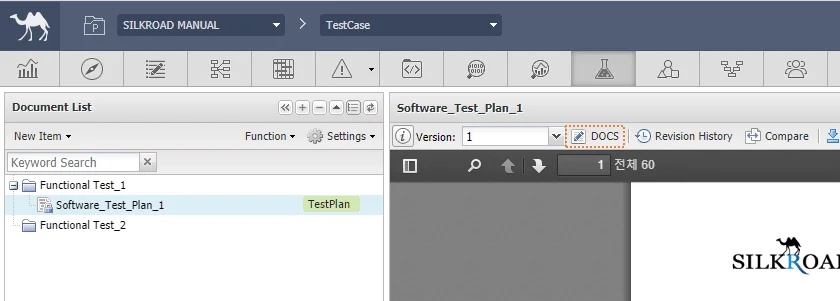 |
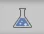
새 문서 등록① Test Case 메뉴( )를 클릭한다.
② Document List에서 ‘New Item’ 메뉴의 펼침(▼)버튼을 클릭한다. 또는 Document List 내 폴더, 여백 영역에서 우 클릭한다.
③ ‘Test Plan’또는 ‘Test Procedure’버튼을 클릭한다.
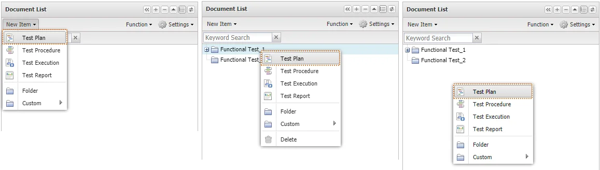 |
|
① Test Case 메뉴( )를 클릭한다.
② Document List에서 대상 Test Plan/Procedure 1개 문서를 클릭한다.
③ Document Viewer 영역 상단의 ‘DOCS’ 버튼을 클릭한다.
④ 또는, Document List에서 대상 Test Plan/Procedure 우 클릭한 후 Context 메뉴에서 DOCS 버튼을 클릭한다.
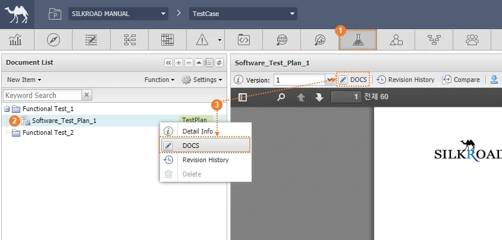 |
바탕화면에서 DOCS 아이콘을 클릭하여 직접 실행 할 수 있다. 바탕화면에서 실행하는 DOCS는 최근 작업 문서(Recent Documents)를 선택하는 기능과 새문서 생성(Create Document)/기존 문서 편집(Open Document) 기능을 제공한다. 최근 작업 문서는 PubSave로 저장한 문서와 Publish한 문서 목록을 표시한다.
① 바탕화면의 DOCS 아이콘( )을 클릭한다.
)을 클릭한다.
② DOCS 화면 하단 Recent Documents에서 DOCS 실행 대상 문서를 선택 후 OK 버튼을 클릭한다.
③ DOCS 로그인 화면에서 로그인 정보(서버 주소, 로그인 타입, 아이디, 비밀번호) 입력 후 Login을 클릭한다.(로그인 화면은 DOCS 설정에서 자동 로그인되도록 설정 가능함)
|
최근 작업 문서는 PubSave 실행/Publish 시 사용자 로컬 PC에 저장되어 있는 문서 목록을 표시한다. 최근 작업 문서 삭제는 문서 목록에서 우 클릭 후 생성되는 컨텍스트 메뉴에서 ‘Remove’를 선택 후 Delete 팝업에서 Yes 버튼을 클릭한다. 삭제된 문서는 로컬 PC에 저장된 문서 데이터이며 서버에 등록된 문서는 삭제되지 않는다. |
① 바탕화면의 DOCS 아이콘( )을 클릭한다.
)을 클릭한다.
② DOCS 화면 상단 Create Document 탭에서 생성할 문서 종류(Plan/Requirement/Test Plan/Test Procedure/Test Report)를 선택한다.
③ DOCS 로그인 화면에서 로그인 정보(서버 주소, 로그인 타입, 아이디, 비밀번호) 입력 후 Login을 클릭한다.(로그인 화면은 DOCS 설정에서 자동 로그인되도록 설정 가능함)
④ New Document 창에서 문서를 생성할 Project/Menu/Phase를 선택 후 OK 버튼을 클릭한다.
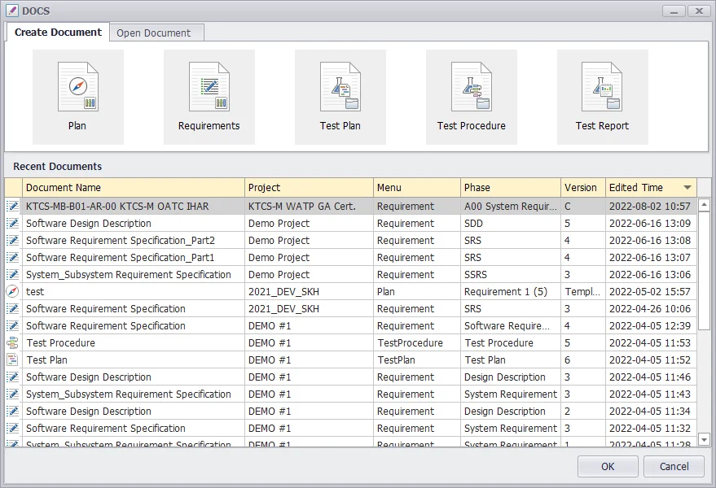 |
① 바탕화면의 DOCS 아이콘( )을 클릭한다.
)을 클릭한다.
② DOCS 화면 상단 Open Document 탭에서 생성할 문서 종류(Plan/Requirement/Test Plan/Test Procedure/Test Report)를 선택한다.
③ DOCS 로그인 화면에서 로그인 정보(서버 주소, 로그인 타입, 아이디, 비밀번호) 입력 후 Login을 클릭한다.(로그인 화면은 DOCS 설정에서 자동 로그인되도록 설정 가능함)
④ Open Document 창에서 편집 대상 문서를 선택 후 OK 버튼을 클릭한다.
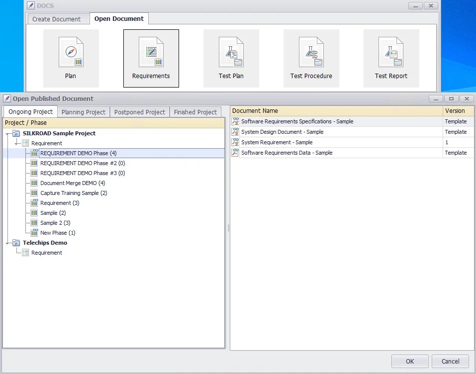 |
|
구분 | 명칭 | 설명 |
| 메뉴 바 | DOCS 기능 버튼 영역(‘Test Feature’, ‘Test Plan’ 탭) |
| Upstream TF | 상위 추적 요구사항 목록 |
| Base TF | 현재 문서 내 Test Feature 목록 |
| Downstream TF | 하위 추적 Test Case 목록 |
| 문서 편집 영역 | 문서 편집 영역(MS-Word) |
|
구분 | 명칭 | 설명 |
| 메뉴 바 | DOCS 기능 버튼 영역(‘Test Case’, ‘Test Procedure’ 탭) |
| Upstream TC | 상위 추적 요구사항, Test Feature 목록 |
| Base TC | 현재 문서 내 Test Case 목록 |
| 문서 편집 영역 | 문서 편집 영역(MS-Word) |
DOCS 사용 시 설정 및 조건에 따라 자동 저장 파일, 로그 파일, 임시 저장 파일을 생성한다. 저장 파일은 기본 설정된 경로 ‘C:\Users\User\AppData\Local\SILKROAD ’ 에 저장되며, Workspace 설정을 통해 폴더 경로를 지정할 수 있다.
① DOCS ‘Setting’ 버튼을 클릭한다.
② 경로 설정 아이콘을 클릭한다.
③ 경로를 지정한다.
④ ‘확인’ 버튼을 클릭한다.
⑤ ‘OK’ 버튼을 클릭한다.
|
Workspace 설정은 저장 후 DOCS를 재실행한 뒤부터 반영된다. |
DOCS의 문서 자동 저장 기능에 대한 사용자별 설정이 가능하다. 자동 저장된 파일은 덮어쓰기를 이용해 저장되어 가장 마지막 저장된 파일을 보관한다. 문서의 최신 변경 내용을 저장하나 등록된 요구사항의 속성(Properties) 정보는 Publish 시점을 기준으로 저장한다.
① DOCS ‘Setting’ 버튼을 클릭한다.
② Autosave ‘Enable’ 체크박스를 체크한다.
③ Save Interval 분(Minute) 또는 시간(Hour)을 지정한다.
④ ‘OK’ 버튼을 클릭한다.
|
Auto Save 설정은 ‘OK‘버튼을 눌러 저장한 후 즉시 적용한다. |
Temp Files는 DOCS에서 작업 중 저장하는 임시 파일이 저장된 폴더이다. DOCS 사용 중 이상 현상으로 인하여 DOCS가 중지되는 경우 임시 파일에 저장된 작업 중인 내용을 확인하여 복구 할 수 있다.
① Temp Files의 ‘Browse’ 버튼을 클릭한다.
② 윈도우 탐색기에서 폴더 목록 중 가장 최근에 수정된 폴더를 클릭한다.
③ 폴더 내 Word 파일에서 작업 내용을 확인 후 복구한다.
|
임시 파일은 실시간으로 저장되는 것이 아니라 최신 작업 내용이 반영되었는지 확인해야 한다. |
DOCS에서는 요구사항 등록 시 장절 번호를 포함/미포함 할 수 있다. Include 옵션이 체크 상태에서는 요구사항 등록 시 요구사항 내용에 있는 장절 번호가 포함된다. 장절 번호가 포함된 요구사항 데이터는 요구사항 등록 또는 편집 시 장절 번호 변경을 업데이트 하지만, 문서에서 다른 장절 번호 수정으로 발생하는 장절 번호 변경 사항은 업데이트 하지 않는다. Include 옵션을 체크해제하면 요구사항 등록 시 요구사항 내용에 있는 장절 번호가 포함되지 않는다.
① Numbering 옵션의 ‘Include’옵션을 체크하고 저장한다.
② 장절 번호가 포함된 요구사항을 등록한다.
③ 요구사항 정보창에서 장절 번호가 표시되는 것을 확인한다.
|
장절 번호 데이터는 Word에서 Tag로 관리되고 있으므로 요구사항 정보창(Text 데이터)에 항상 최신 데이터를 반영할 수 없다. 따라서 장절 번호 데이터를 요구사항 정보창에 표시하는 것을 사전에 검토 후 결정해야 한다. |
DOCS를 Local에서 실행(Stand-Alone DOCS) 하는 경우에는 로그인 정보가 필요하다. DOCS 실행 시 로그인 창에서 서버 정보와 계정 정보를 입력해야 하는데, Login 옵션에서 ‘Keep Me Logged In’ 옵션 활성화 시 자동 로그인 기능을 실행 할 수 있다.
① ‘Keep Me Logged In’ 옵션 활성화 후 저장한다.
② 바탕화면에서 DOCS 아이콘을 클릭하여 DOCS를 실행한다.
③ 로그인 팝업창이 생성되지 않고, DOCS가 실행되는 것을 확인한다.
|
현제 열린 DOCS와 독립적인 또 하나의 DOCS를 여는 기능이다. DOCS 창을 생성해 최근 작업 문서(Recent Documents)를 선택하는 기능과 새문서 생성(Create Document)/기존 문서 편집(Open Document) 기능을 제공한다. 최근 작업 문서는 PubSave로 저장한 문서와 Publish한 문서 목록을 표시한다.
① ‘Publication’ 탭의 ‘DOCS’ 그룹에서 ‘Files’ 버튼을 클릭한다.
② ‘DOCS’창이 생성된다.
|
새로운 문서를 생성하는 기능이며, 문서편집기에는 MS-Word가 내장되어 있다.
① ‘Test Plan’또는 ‘Test Procedure’탭의 ‘Document’ 그룹에서 ‘Create’ 버튼을 클릭한다.
② ‘New Document’화면에서 문서를 생성 할 경로(프로젝트/메뉴/Root, Folder)를 선택한다.
③ ‘OK' 버튼을 클릭한다.
|
‘Create’는 DOCS에서 새로운 문서를 작성하는 기능으로 ‘Close’ 버튼을 클릭해 현재 DOCS에 열려 있는 Word 문서를 닫은 후 기능이 활성화된 ‘Create’ 를 실행한다. 사용자가 참여된 프로젝트, 쓰기(Write) 권한이 있는 메뉴에 대해 새 문서를 생성한다. |
SILKROAD 서버에 저장된 Test Plan/Procedure 문서를 불러오는 기능이다. 편집 권한이 있는 문서에 한하여 문서 불러오기 및 편집이 가능하며, 불러온 문서의 위치(프로젝트, 메뉴 및 Folder)는 수정할 수 없다.
‘Open’ 대상 문서는 사용자에게 쓰기(Write) 이상의 권한이 부여된 문서로 제한하며, 다른 사용자가 잠근(Lock)문서는 ‘Open’ 기능을 실행 할 수 없다. 또한, 기존 등록된 문서 중 Baseline에 등록된 문서는 Workflow가 사용자 설정한 특정 상태(Status)에 도달하기 전까지 ‘DOCS’ 를 실행할 수 없다.
① ‘Test Plan’ 또는 ‘Test Procedure’탭의 ‘Document’ 그룹에서 ‘Open’ 버튼을 클릭한다.
② ‘Open Published Document’화면에서 프로젝트 목록에서 프로젝트, 메뉴 및 Folder를 선택한다.
③ 문서 목록에서 불러올 문서를 선택한다.
④ ‘OK’ 버튼을 클릭한다.
|
‘Open’은 서버에 저장된 문서를 여는 기능으로, 사용자의 PC에 저장된 MS-Word 문서는 MS-Word Import 기능을 통해 DOCS로 불러와서 열어 편집할 수 있다. |
문서 삭제 기능은 Project Manager, Super 및 Admin 권한을 가진 사용할 수 있다.
① ‘Test Plan’또는 ‘Test Procedure’탭의 ‘Document’ 그룹에서 ‘Delete’ 버튼을 클릭한다.
② ‘Yes’ 버튼을 클릭한다.
|
Master 문서를 삭제하려는 경우 Master 문서 단독으로 삭제와 병합되어 있는 Sub Document 동반 삭제 여부를 선택할 수 있다.
① ‘Publication’ 탭의 ‘Document’ 그룹에서 ‘Delete’ 버튼을 클릭한다.
② ‘Yes’ 버튼을 클릭한다.
③ 병합된 Sub Document를 함께 삭제하고자 하는 경우 ‘Yes’ 버튼을 클릭한다.
④ Master 문서만 삭제하려는 경우 ‘No’ 버튼을 클릭한다.
⑤ ‘Are you sure to delete M document only?‘ 안내팝업에서 ‘Yes’ 버튼을 클릭한다.
문서 삭제 기능은 Project Manager, Super 및 Admin 권한을 가진 사용자가 사용할 수 있다.
① Test Case 메뉴( )를 클릭한다.
② 삭제 할 문서를 클릭한다.
③ 마우스를 우 클릭하여 콘텍스트메뉴에서 ‘Delete’를 선택한다.
④ ‘Do you want to delete this document?’안내팝업에서‘Yes’를 클릭한다.
|
Master 문서를 삭제하려는 경우 Master 문서 단독으로 삭제와 병합되어 있는 Sub Document 동반 삭제 여부를 선택할 수 있다.
① 삭제 할 문서를 클릭한다.
② 마우스를 우 클릭하여 콘텍스트메뉴에서 ‘Delete’를 선택한다.
③ ‘Do you want to delete sub document(s) as well?’ 안내팝업에서 ‘Yes’ 버튼을 클릭한다.
④ 병합된 Sub Document를 함께 삭제하고자 하는 경우 ‘Yes’ 버튼을 클릭한다.
⑤ Master 문서만 삭제하려는 경우 ‘No’ 버튼을 클릭한다.
⑥ ‘Are you sure to delete M document only?’ 안내팝업에서 ‘Yes’ 버튼을 클릭한다.
DOCS에서 현재 편집중인 Wrod 문서를 종료하는 기능이다. DOCS에 열려 있는 문서를 닫기(Close) 하면 새로운 문서 작성(Create) 또는 열기(Open) 기능이 활성화되어 새로운 편집 대상 문서를 선택할 수 있다.
① ‘Test Plan’또는 ‘Test Procedure’탭의 ‘Close’ 버튼을 클릭을 클릭한다.
② ‘Do you want to close this document?’ 안내팝업에서 ‘Yes’를 선택한다.
① ‘Test Plan’또는 ‘Test Procedure’탭의 ‘Close’ 버튼을 클릭을 클릭한다.
② ‘The document has been change. Do you want to publish it?’ 안내팝업이 생성된다. Publish를 원할 경우 ‘Yes’를 선택해 Publish를 진행하고 원하지 않는다면 ‘No’를 선택한다.
③ ‘Do you want to close this document?’ 안내팝업에서 ‘Yes’를 선택한다.
① ‘Test Plan’또는 ‘Test Procedure’탭의 ‘Close’ 버튼을 클릭을 클릭한다.
② ‘Do you want to unlock this document?’안내팝업에서 ‘Yes’또는 ‘No’또는 ‘Cancel’을 선택한다.
(Yes 선택 시) 해당 문서는 잠금해제(Unlock) 상태가 되어 쓰기(Write)이상의 권한이 있는 사용자가 편집 할 수 있다.
(No 선택 시) 해당 문서는 잠금(Lock) 상태가 되어 문서 작성자 본인 및 관리자(Administrator)만 편집 할 수 있다.
(Cancel 선택 시) 문서 닫기 기능이 취소된다.
① ‘Test Plan’또는 ‘Test Procedure’탭의 ‘Close’ 버튼을 클릭을 클릭한다.
② ‘The document has been change. Do you want to publish it?’ 안내팝업이 생성된다. Publish를 원할 경우 ‘Yes’를 선택해 Publish를 진행하고 원하지 않는다면 ‘No’를 선택한다.
③ ‘Do you want to unlock this document?’안내팝업에서 ‘Yes’또는 ‘No’또는 ‘Cancel’을 선택한다.
④ (Yes 선택 시) 해당 문서는 잠금해제(Unlock) 상태가 되어 쓰기(Write)이상의 권한이 있는 사용자가 편집 할 수 있다.
(No 선택 시) 해당 문서는 잠금(Lock) 상태가 되어 문서 작성자 본인 및 관리자(Administrator)만 편집 할 수 있다.
(Cancel 선택 시) 문서 닫기 기능이 취소된다.
|
현재 편집 중인 문서를 인쇄하는 기능이다.
① ‘Test Plan’또는 ‘Test Procedure’탭의 ‘Document’그룹에서 ‘Print’버튼을 클릭한다.
② 프린터를 선택하여 출력한다.
|
실크로드 요구사항 데이터는 Word 내 컨텐츠 컨트롤/북마크 객체를 활용한다. Verification은 사용자가 편집 중 컨텐츠 컨트롤/북마크 객체를 변경 또는 삭제하여 요구사항 데이터 오류로 Publish Fail등 오류가 발생 할 경우, 문서 내 컨텐츠 컨트롤/북마크 객체 데이터를 검증하고 복구하는 기능이다. 문서 검증 및 복구 내용은 아래와 같다.
요구사항으로 등록되지 않은 컨텐츠 컨트롤 삭제
요구사항으로 등록되지 않은 비정상적인 북마크 삭제
컨텐츠 컨트롤이 없는 요구사항 삭제
Pass/Fail 북마크 정리
북마크 위치 조정
요건 내용 비교 후 변경 요건 검사
① ‘Publication’탭의 ‘Document’그룹에서 ‘Verification’버튼을 클릭한다.
② 문서 검증 결과 창을 확인한다.
Abnormal ContentControl/Bookmarks ( ) are found and corrected : 비정상적인 컨텐츠컨트롤/북마크 데이터 ( )개를 수정하였음
No abnomal unit requirement was found : 문서 내 비정상적인 데이터 없음
|
Word 내 컨텐츠 컨트롤/북마크 객체는 실크로드 요구사항 데이터와 연계되어 있어 문서 편집 시 주의해야 한다. 문서 내 요구사항 데이터 복사 시 Content Control이 복사되며, 복사된 Content Control은 요구사항 등록 시 오류가 발생할 가능성이 있다. 문서 내 요구사항 영역을 이동하기 위하여 잘라내기 시 실크로드 요구사항이 삭제된다. |
하나의 요구사항/디자인 문서를 여러 개의 섹션으로 나누어 동시에 여러 명이 함께 작업하고 각 문서를 하나의 문서로 병합하는 기능이다. 병합된 최종 문서는 PDF와 MS Word 파일로 생성된다.
병합 대상 문서로 선택 할 수 없는 문서는 다음과 같다.
- 다른 사용자가 잠금 설정(Lock)한 문서
다른 사용자가 잠근 문서는 병합 대상 문서로 선택 시 제한 안내 팝업이 생성된다. 해당 문서를 잠금 해제(Unlock) 시 선택이 가능하며, 문서를 잠근 담당자 또는 관리자를 통해 잠금 해제가 가능하다.
- 사용자의 문서 권한이 ‘Read’문서
병합 대상 문서는 사용자에게 부여된 문서권한이 ‘Write’ 이상인 문서를 선택해 추가 할 수 있다. 문서권한이 ‘Read’인 경우, 문서 선택 시 안내 팝업이 생성된다. 관리자를 통해 해당 문서에 대해 쓰기(Write) 권한 이상을 부여 받을 시 병합 대상 문서로 선택이 가능하다.
- 사용자의 문서 권한이 ‘None’문서
병합 대상 문서를 선택하는 사용자에게 부여된 문서권한 ‘Read’ 이상인 문서만 목록에 표시되고, 권한이 없는(None) 문서는 목록에 표시되지 않는다. 관리자를 통해 해당 문서에 대해 쓰기(Write) 권한 이상을 부여 받을 시 병합 대상 문서로 선택이 가능하다.
- 이미 병합되어 있는 문서
이미 병합되어 있는 문서들은 병합 대상 문서를 선택하는 목록에 표시되지 않는다. 해당 문서를 선택하고자 할 때는 Sub Document 제거(Unlink)를 통해 병합 상태 해제 시 병합 대상 문서 목록에 표시되어 선택이 가능하다.
① DOCS가 실행되면 ‘Test Plan’또는 ‘Test Procedure’탭 Sub Document 그룹의 ‘Link’ 버튼을 클릭한다.
② ‘Open Published Document’화면 좌측에서 병합할 문서가 존재하는 프로젝트 및 ‘Folder’를 선택한다.
③ Sub Document 대상 문서를 선택한다.
④ ‘OK’ 버튼을 클릭한다.
⑤ Link된 문서가 하이퍼링크로 삽입된다.
⑥ ‘Publish’ 버튼을 클릭하여 병합 문서 생성을 완료한다.
⑦ Publish가 완료되면 기능시험 관리 시스템의 ‘Document List’에 Folder/문서 구조에 병합될 문서(Master Document)와 병합 대상 문서(Sub Document)가 표시된다.
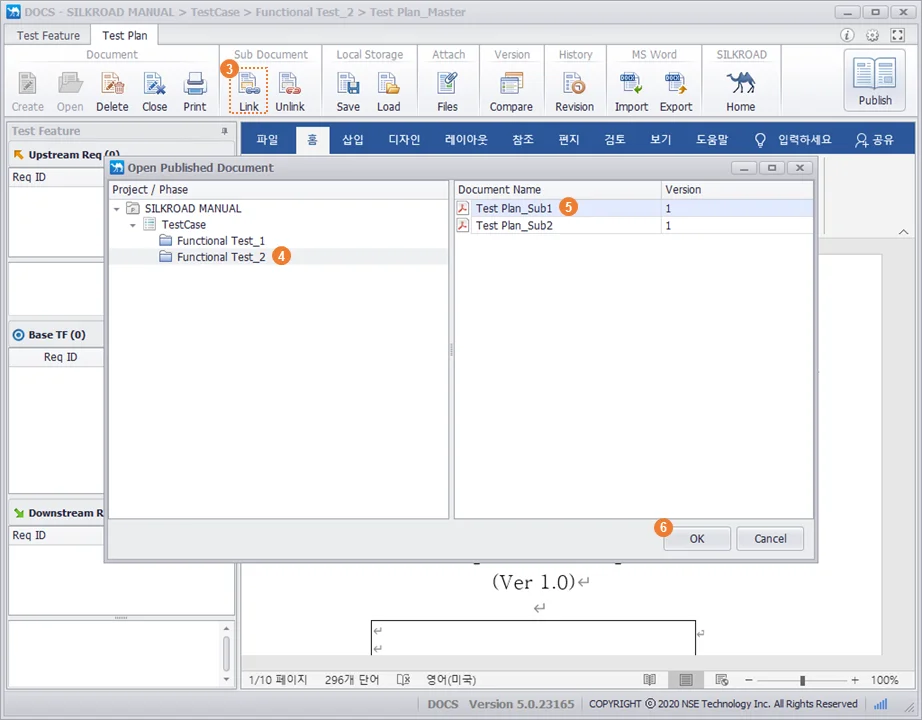 |
병합된 문서명칭은 파란색 굵은 글씨로 콘텐츠컨트롤 내 표시된다. 본문에 삽입된 Sub Document 링크는 수정할 수 없으며 Unlink를 통해 제외할 수 있다. |
|
병합 시 문서에 위치한 순으로 병합이 진행되어 이미 추가된 ‘Sub Document’의 위치를 변경해 병합 대상 문서의 순서를 조정할 수 있다. 문서에 삽입된 ‘Sub Document’ 위치 이동은 최초 문서에 추가 된 후 Publish 전까지 가능하다. Publish 이후에는 Unlink 한 뒤 Publish 해 병합 상태를 해제 한 뒤 다시 문서에 추가 하는 방법으로 위치를 변경 한다.
① 문서 내 ‘Sub Document’를 위치시키고자 하는 곳에 마우스 커서를 클릭한다.
② ‘Test Plan’또는 ‘Test Procedure’탭 Sub Document 그룹의 ‘Link’ 버튼을 클릭한다.
③ ‘Open Published Document’화면에서 병합할 문서가 존재하는 프로젝트 및 하위 Phase를 선택한다.
④ ‘Selected document is already sub-linked. Relocate the sub-link document at the cursor location?’ 안내 팝업에서 ‘Yes’를 클릭한다.
DOCS 내 Word 문서에 추가된 병합 대상 문서를 제외하는 기능이다. 병합 대상에서 제외된 문서는 병합 대상 문서가 이루고 있던 구조에서 벗어나 삭제 및 Phase 이동이 가능한 상태가 된다.
① ‘Test Plan’또는 ‘Test Procedure’탭의 ‘Sub Document’ 그룹에서 ‘Unlink’ 버튼을 클릭하면 ‘Unlink’ 창이 생성된다.
② Sub Document 제외 대상 문서를 선택한다.
③ ’Remove’ 버튼을 클릭하여 문서를 삭제(Unlink)한다.
④ ‘OK’ 버튼을 클릭해 Unlink를 완료한다.
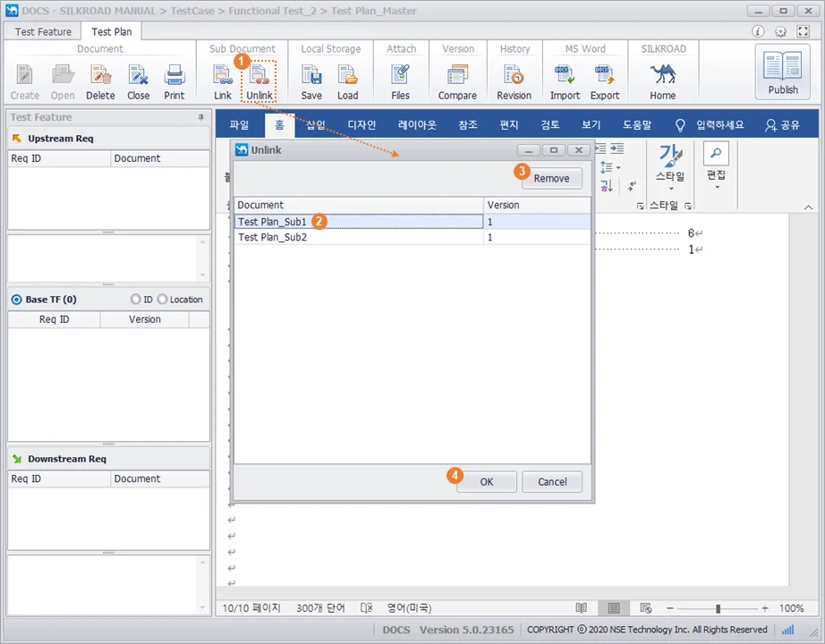 |
‘Unlink’ 실행 결과는 Publish 완료 시 반영된다. |
현재 문서를 사용자 PC에 임시 저장하는 기능이다. 문서의 Publish를 원하지 않을 경우 해당 기능을 사용하여 문서 작업이 완료될 때까지 사용자의 로컬 저장소에 문서를 저장할 수 있다. 임시저장(수동/자동) 데이터는 Word 문서 편집 내용, 요구사항 등록/삭제 결과를 포함하며 요구사항 추적성 정보는 저장하지 않는다. 임시저장 문서는 불러오기(Load)를 통해 DOCS에서 편집하고 Publish할 수 있다.
수동 저장 실행 시점까지 작성된 내용 및 정보, 요구사항 등록 결과를 저장한다. 등록된 요구사항의 속성(Properties) 정보는 Publish 시점을 기준으로 저장한다.
① ‘Test Plan’또는‘Test Procedure’탭의 ‘Local Storage’ 그룹에서 ‘Save’ 버튼을 클릭하면 ‘Save to local storage’ 창이 생성된다.
② ‘Enter the comments’ 항목에 사용자 코멘트를 작성한다.
③ ‘OK’ 버튼을 클릭하여 임시 저장을 완료한다.
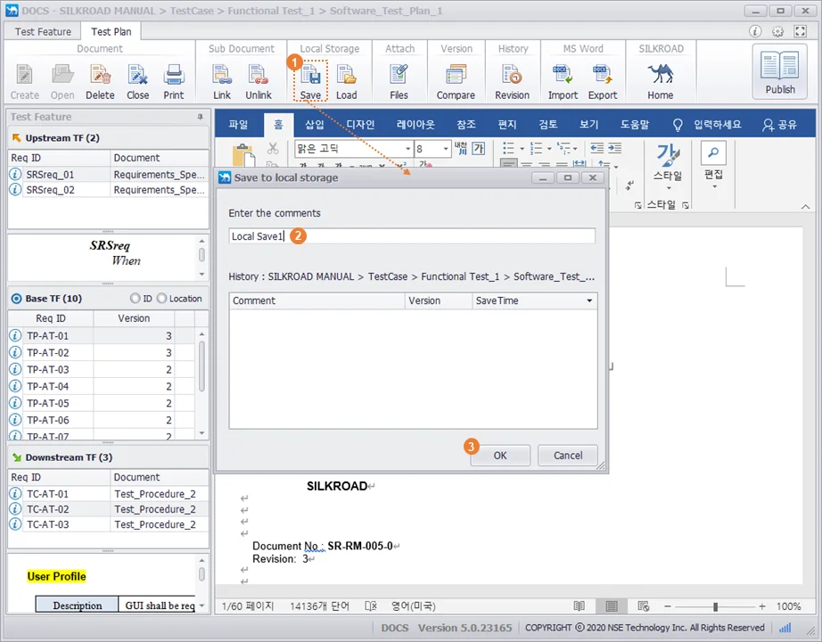 |
자동 저장된 파일은 사용자가 설정한 시간 단위로 생성되고 덮어쓰기를 이용해 저장되어 가장 마지막 저장된 파일을 보관한다. 수동 저장과 같이 문서의 최신 변경 내용을 저장하나 등록된 요구사항의 속성(Properties) 정보는 Publish 시점을 기준으로 저장한다. DOCS ‘Setting’ 버튼을 클릭한다.
① DOCS ‘Setting’ 버튼을 클릭한다.
② Autosave ‘Enable’ 체크박스를 체크한다.
③ ‘Save Interval’ 분(Minute) 또는 시간(Hour)을 지정한다.
④ ‘OK’ 버튼을 클릭한다.
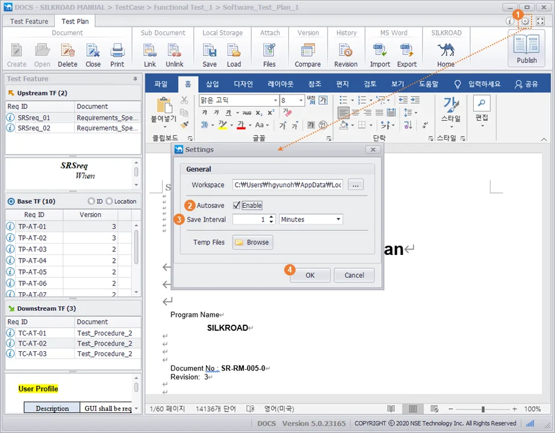 |
자동 저장 설정 입력 후 ‘OK’ 버튼을 눌러 저장하는 즉시 설정을 반영한다. |
임시저장(Save)을 통해 사용자 PC에 저장한 문서를 DOCS로 불러오는 기능이다. Local Load 문서는 ‘Local Storage’의 모든 임시저장(수동/자동) 파일을 대상으로 한다.
문서 임시저장 후 실크로드 상의 해당 문서가 Publish되어 버전이 상승한 경우 이전 버전인 임시저장 파일은 읽기전용 상태로 불러오기 기능을 실행 할 수 있다. 버전이 0인 문서를 임시저장 후 ‘Load’ 하는 경우 ‘New Document’ 생성을 위한 팝업이 제공된다.
① ‘Test Plan’또는‘Test Procedure’탭의 ‘Local Storage’ 그룹에서 ‘Load’ 버튼을 클릭한다.
② ‘Load from Local Storage’화면의 문서 목록에서 불러올 파일을 선택한다.
③ ‘Load’ 버튼을 클릭한다.
|
실크로드 서버에서 다운로드 하거나, DOCS에서 Export 기능으로 로컬 PC에 저장된 MS-Word 문서는 Import 시 새 문서 (Create)로 등록하거나 기존 등록된 문서를 업데이트하는 ‘Update’를 수행할 수 있다.
요구사항이 식별된 문서를 새 문서(Create)로 Import하는 경우 문서에 포함되어 있는 요구사항 데이터를 자동으로 등록(Restore)할 수 있다.
실크로드 서버에 등록되지 않은 Word 문서를 Import 하는 경우, 새 문서로 등록하거나 ‘Select’를 이용해 기존 등록된 대상 문서에 덮어쓰기 할 수 있다.
① ‘Test Plan’또는‘Test Procedure’탭의 ‘MS Word’ 그룹에서 ‘Import’ 버튼을 클릭한다.
② 대상 문서(MS-Word)를 선택한다.
③ ‘열기’ 버튼을 클릭한다.
④ ‘There is no document information to update. Do you want to register as a new document?’ 안내팝업에서 ‘Yes’버튼을 클릭한다.
⑤ 실크로드 서버에 등로된 문서를 Export/Download 한 경우‘This is document exported from SILKROAD. Do you want to update the document or create a new document?’안내팝업에서 ‘Create’, ‘Update’ 또는 ‘Cancel’을 선택한다.
⑥ ‘Create Document’화면에서 문서를 저장할 프로젝트 및 위치를 선택한다.
⑦ ‘OK’ 버튼을 클릭한다.
문서에 암호(Word 쓰기/읽기 암호) 설정된 경우, 암호 입력 후 Word 문서를 열 수 있고 설정된 암호는 완전히 해제 된다. 필요 시 해당 문서 Export/Down 로드 후 다시 암호 설정을 해야 한다. |
|
기존 실크로드에 등록되어 있는 문서에 ‘Update’ 하는 경우 서버에 등록된 문서의 내용이 Import 문서의 내용으로 업데이트되며 요구사항에 변경사항이 있는 경우 요구사항의 버전이 증가한다. 단, 그림, 수식이 포함된 요구사항의 경우 변경사항이 없어도 버전이 증가 될 수 있다.
‘Update’ 선택 시 대상 문서가 삭제된 경우 Update를 할 수 없으며 이에 대한 알림 팝업이 생성된다. ‘Update’ 선택 시 대상 문서에 대한 사용자의 권한이 Read 이하인 경우 Update를 할 수 없으며 이에 대한 알림 팝업이 생성된다.
① ‘Test Plan’또는‘Test Procedure’탭의 ‘MS Word’ 그룹에서 ‘Import’ 버튼을 클릭한다.
② 대상 문서(MS-Word)를 선택한다.
③ ‘열기’버튼을 클릭한다.
④ ‘This is document exported from SILKROAD. Do you want to update the document or create a new document?’안내팝업에서 ‘Create’, ‘Update’ 또는 ‘Cancel’을 선택한다.
(Update선택 시) 불러오는 문서로 SILKROAD에 저장된 기존 문서가 업데이트 된다. 문서의 변경내용이 모두 자동으로 적용된다.
(Create 선택 시) 불러오는 문서는 기존 문서와는 별개로 SILKROAD에 새로운 문서로 생성된다. Restore 선택 시 기존 등록되었던 요구사항을 자동으로 등록한다.
(Cancel 선택 시) Import 기능이 취소된다.
실크로드에서 다운로드 하지 않거나, DOCS에서 Export하지 않은 MS-Word 문서는 새 문서(Create) 또는 기존 문서 덮어쓰기(Select)로 등록 가능하다. 기존 문서 덮어쓰기(Select)란 실크로드에 작성된 문서의 최신 버전을 Import 대상 문서로 변경하는 기능이다. 문서의 버전을 유지하면서 문서 내용을 모두 변경하는 경우 덮어쓰기 기능을 사용할 수 있다.
Word 문서 보호 기능에 의한 열기/쓰기 제한이 설정된 문서를 Import 하는 경우, 암호입력 후 파일을 불러올 수 있다.
① ‘Publication’ 탭의 ‘MS Word’ 그룹에서 ‘Import’ 버튼을 클릭한다.
② 대상 문서(MS-Word)를 선택한다.
③ ‘열기’ 버튼을 클릭한다.
④ ‘There is no document information to update. Do you want to register as a new document?’ 안내팝업에서 ‘Yes’버튼을 클릭한다.
⑤ ‘Create Document’화면에서 문서를 저장할 프로젝트 및 하위 Phase를 선택한다.
⑥ ‘OK’ 버튼을 클릭한다.
문서 덮어쓰기(Select) 기능은 기존에 등록되어 있는 요구사항/추적성 데이터가 모두 삭제되기 때문에 사용에 유의해야 한다. |
DOCS를 통해 작성한 문서를 Word 문서로 사용자 PC에 저장한다. Export 기능은 Publish를 한 뒤부터 사용할 수 있다. 문서에 작성된 내용과 요구사항 등록 정보는 최신 상태를 반영하며 등록된 요구사항의 속성(Property) 정보는 Publish 시점을 기준으로 저장한다. 따라서 모든 최신 정보를 반영한 문서를 저장하고자 하는 경우 Publish를 마친 후 Export 해야 한다.
DOCS에서 Export한 문서에 등록된 요구사항의 북마크 ID는 고유한 값이므로 복사/붙여넣기를 사용할 수 없고 Export한 문서에서 요구사항 내용을 수정하는 경우, 생성된 콘텐츠컨트롤 내에서 수행되어야 한다.
① ‘Test Plan’또는‘Test Procedure’탭의 ‘MS Word’ 그룹에서 ‘Export’ 버튼을 클릭한다.
② Export 경로와 파일 이름을 지정한다.
③ ‘저장’ 버튼을 클릭한다.
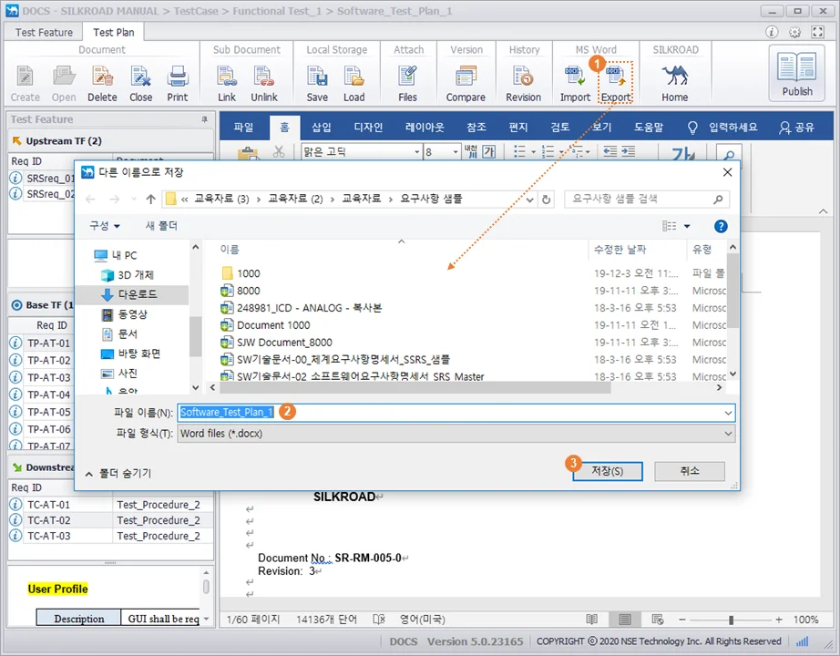 |
Export한 문서는 DOCS의 문서생성 정보(버전, 위치 등)와 등록된 Test Feature/Test Case 정보(북마크 ID, 콘텐츠컨트롤)를 가진다. |
로컬 PC에 DOCS에서 작업한 문서 데이터(Word, 요구사항, 추적성)를 저장하는 기능이다. 저장한 데이터는 Local에서 실행하는 DOCS의 Recent Documents에서 확인할 수 있다. PubSave/Local Save/Export 기능 차이는 아래와 같다.
저장 대상 | 저장 위치 | 사용 목적 | |
Pub Save | Word 문서 요구사항 데이터 추적성 | 로컬 PC 시스템 지정 폴더 | Publish 전 문서 데이터 저장 |
Local Save | Word 문서 요구사항 데이터 | 로컬 PC 시스템 지정 폴더 | Word 임시 저장 /자동 저장 |
Export | Word 문서 요구사항 데이터 | 로컬 PC 사용자 정의 폴더 | 실크로드 접속이 안되는 외부에서 문서 편집 후 반영 |
① ‘PubSave’ 버튼을 클릭한다.
② PubSave 결과 팝업창에서 ‘OK’ 버튼을 클릭한다.
PubSave 파일은 C:\Users\사용자계정\AppData\Local\SILKROAD\SavedPublication 폴더에 저장된다. PubSave 파일 삭제는 DOCS Files 화면의 Recent Documents 목록에서 우 클릭하여 Delete로 가능하다. PubSave 파일은 문서의 최신 버전만 유지하며, 과거 버전은 저장하지 않는다. |
DOCS의 ‘Publish’기능은 DOCS에서 작성된 문서, 요구사항 및 추적성 정보 등을 SILKROAD 서버에 저장하는 기능이다. 문서의 버전(Version)은 시스템에서 기본적으로 ‘1’로 설정되며, 사용자가 변경할 수 있다. Publish 실행 시마다 자동으로 이전 문서 버전 +1로 제공된다. Publish 시 옵션을 통해 문서의 속성 필드 정보를 설정하거나 문서의 PDF 생성 옵션(PDF 생성 방법/변경 내용 추적)을 결정할 수 있다.
|
구분 | 명칭 | 설명 |
| Project | 문서가 저장될 프로젝트 명칭 |
| Menu | 문서가 저장될 메뉴 명칭 |
| Phase | 문서가 저장될 Folder 명칭 |
| Doc Name* | 문서 명칭 (필수 입력) |
| Version* | 문서 버전 (필수 입력) |
| Convert To Pdf (Server, Local, Not now) | PDF로 문서를 변환하는 과정을 서버, 로컬 또는 바로 저장하지 않을지 선택 |
| Description (Reason For Changes)* | 개정 이력 (필수 입력) |
| Publish | 문서 발행 |
| Property | 문서 속성 정보 |
OK / Cancel | 문서 발행(OK) / 문서 발행 취소(Cancel) |
① DOCS 우측 상단 ‘Publish’ 버튼을 클릭하면 ‘Publish’ 창이 생성된다.
② 필수 입력항목인 문서 제목(Doc Name), 버전(Version) 및 설명(Description)을 입력한다.
③ ‘Publish’ 버튼 또는 ‘OK’ 버튼을 클릭한다.
‘Convert To Pdf 체크박스 Local 선택 시 PDF를 즉시 생성하고, Server 선택 시 PDF를 바로 생성을 하지 않으며 추후 웹에서 PDF 생성 가능하다. ‘Property 버튼’을 클릭하여 문서의 속성을 설정할 수 있다. |
|
Publish 팝업에서 ‘Property 버튼’을 클릭하여 문서의 속성을 설정할 수 있다. 기본적으로 문서의 우선순위(Priority)와 약어(Abbreviation)을 설정하는 필드를 제공한다. 설정된 속성 정보는 문서의 정보창에 표시한다.
① DOCS 우측 상단 ‘Publish’ 버튼을 클릭한다.
② Property 버튼을 클릭한다.
③ 속성을 입력/선택한다.
④ OK 버튼을 클릭한다.
[그림 누락] |
‘Property’에 제공되는 속성 필드 추가는 ‘Project Setting – Custom Field‘에서 지원한다. 프로젝트 관리자는 Test Plan/Procedure에 대한 Tracker에 필드를 추가해 ’Property ’에 표시하는 필드를 추가/변경할 수 있다.
① 프로젝트 관리자 또는 사용자 권한 ‘Admin’ 인 사용자가 ‘Project Setting’ 실행 후 ‘Custom Field’ 탭 이동한다.
② 대상 Tracker 선택한다.
- Test Plan 문서 : TestPlan Tracker
- Test Procedure : TestProcedure Tracker
③ Designer 영역에 Custom Templates를 드래그&드롭으로 추가하고 Value 영역을 클릭 해 데이터를 설정한다.
④ ‘OK’ 버튼 클릭한다.
⑤ Test Plan/Procedure 문서 DOCS 실행한다.
⑥ ‘Publish‘ 버튼 클릭한다.
⑦ ’Property‘ 버튼을 클릭한다.
[그림 누락] |
사용자 PC에 있는 파일을 선택하여 현재 작업 중인 문서의 첨부파일로 등록한다. 첨부된 파일은 기능시험 관리 시스템의 문서 정보 창( ) ‘Attachments’ 탭에서도 열람/다운로드할 수 있다.
) ‘Attachments’ 탭에서도 열람/다운로드할 수 있다.
① ‘Test Plan’또는‘Test Procedure’탭의 ‘Attach’그룹에서 ‘Files’버튼을 클릭하면 ‘Attachment’ 창이 생성된다.
② ‘Attachments’화면에서 좌측 상단의 ‘Browse’버튼을 클릭한다.
③ 윈도우즈 탐색기에서 첨부할 파일을 선택한다.
④ ‘열기’버튼을 클릭한다.
⑤ ‘OK’버튼을 클릭한다.
파일 추가 시 ‘Files’ 버튼에 추가된 파일의 수를 (파일 수)로 표기한다.
|
작업 중인 문서에 첨부된 파일을 삭제하는 기능이다.
① ‘Test Plan’또는‘Test Procedure’탭의 ‘Attach’그룹에서 ‘Files’버튼을 클릭하면, ‘Attachment’ 창이 생성된다.
② ‘Attachments’화면의 첨부파일 목록에서 삭제할 파일을 선택한다.
③ 우측 상단 ‘Remove’버튼을 클릭한다.
① OK 버튼을 클릭한다.
(Cancel 버튼 클릭 시 ) 파일 삭제 내용이 저장되지 않는다.
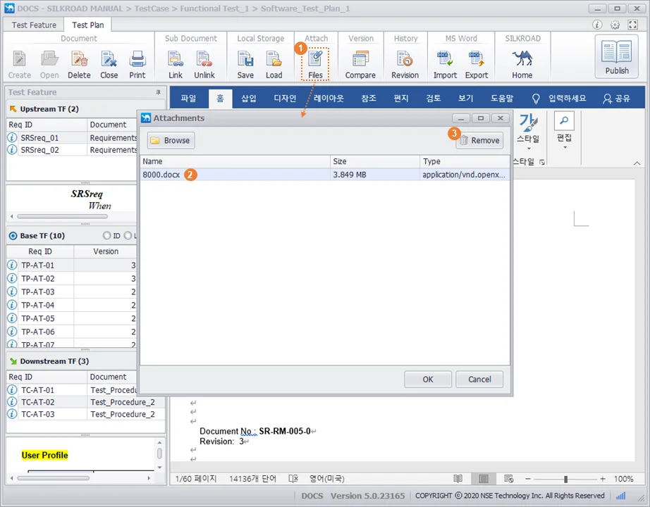 |
문서의 Publish 이력을 테이블로 생성한다. 해당 정보는 문서의 버전별 Publish 일자, 버전, 설명(Description)을 기반으로 생성된다. 테이블을 복사(Copy)하여 문서 내에 붙여 넣기(Ctrl+V) 할 수 있다.
① ‘Test Plan’또는‘Test Procedure’탭의 ‘History’그룹에서 ‘Revision’버튼을 클릭한다.
② ‘Revision History’ 창이 생성된다.
|
‘Revision History’화면에서 우측 하단 ‘Copy’버튼을 클릭하면 Revision History 내용을 클립보드에 복사할 수 있으며, 복사된 내용은 문서에서 붙여넣기(Ctrl+V) 할 수 있다. |
문서의 버전 간 변경내용을 비교할 수 있다.
① ‘Test Plan’또는‘Test Procedure’탭의 ‘Version’그룹에서 ‘Compare’버튼을 클릭하면 ‘Version Compare’창이 생성된다.
② ‘Version Compare’화면에서 비교하고자 하는 문서 버전을 선택한다.
- Base Version : 비교하고자 하는 문서의 기준 버전
- Compare Version : 기준 버전과의 비교 대상 버전
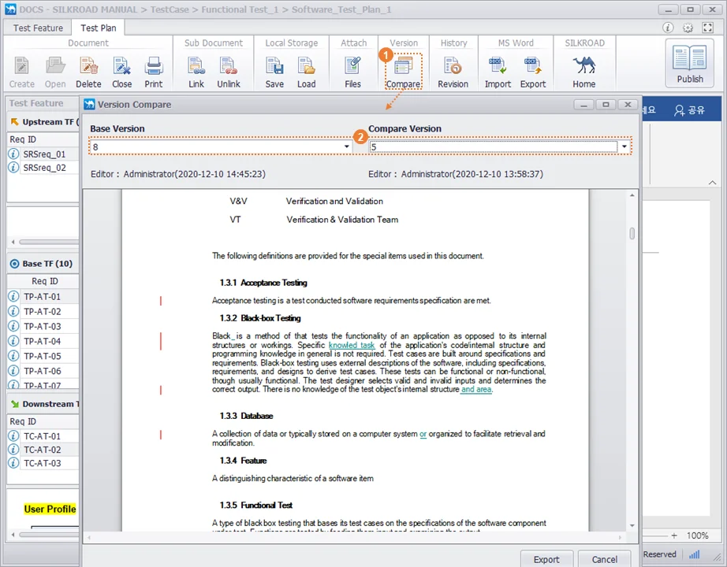 |
‘Version Compare’화면 우측 하단 ‘Export’버튼을 클릭하면 문서 비교 결과를 MS-word(.docx) 파일로 저장할 수 있다. |
테스트 문서에 포함된 Test Feature/Test Case를 개별 데이터로 저장하는 기능이다. 그림, 표, 수식 등 모든 개체를 식별/등록할 수 있다. 이미 등록된 Test Feature/Test Case의 내용은 새로운 Test Feature/Test Case의 내용으로 포함할 수 없다.
기본으로 제공하는 Test Feature/Test Case 식별자(Test Feature/Test Case ID)는 ‘TF 001’또는 ‘TC 001’이며, 사용자가 수정 할 수 있다. 기존에 등록된 Test Feature/Test Case가 존재하는 경우, Test Feature/Test Case 식별자 번호는 등록되어진 마지막 Test Feature/Test Case 식별자 번호 +1 값으로 자동 입력된다. 등록된 est Feature/Test Case는 정보창을 통해 ID와 속성 필드 수정, 추적성 연결이 가능하다.
|
구분 | 명칭 | 설명 |
| Test Feature/ Test Case ID | Test Feature/Test Case 아이디 입력칸 |
| Pass/Fail | Pass/Fail 인식된 개수 |
| Test Feature/ Test Case 내용 | Test Feature/Test Case 내용 |
| Properties | Test Feature/Test Case 속성 정보 (Category, Priority, SearchTag 등) |
| Traceability | Test Feature/Test Case 추적성 연결(Link)/해제(Unlink) 버튼 |
| Req ID/ Document | 해당 Test Feature/Test Case와 추적성이 연결된 요구사항, Test Feature의 ID 및 문서 명칭 |
| 요구사항 내용 | 추적성이 연결된 요구사항, Test Feature의 내용 |
| OK / Cancel | Test Feature/Test Case 개별등록(OK) / 취소(Cancel) |
① Test Feature/Test Case로 등록할 내용을 드래그하여 블록 설정한다.
② ‘Test Feature’ 탭 ‘Test Feature’ 그룹 또는 ‘Test Case’ 탭 ‘Test Case’ 그룹에서 ‘Add’ 버튼을 클릭한다.
③ Test Feature/Test Case 식별자(Test Feature/Test Case ID), 중요도(Priority), 분류(Category) 정보를 입력한다.
④ ‘OK’ 버튼을 클릭한다.
|
|
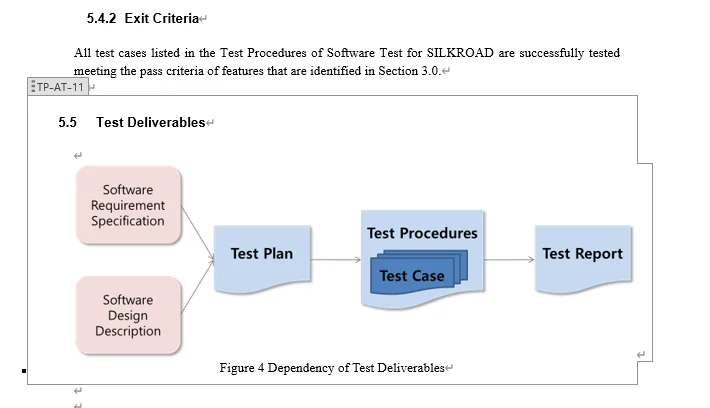 |
Test Feature/Test Case가 등록되면 문서 내 Test Feature/Test Case 영역에 콘텐츠 컨트롤이 생성된다. 콘텐츠 컨트롤은 등록된 Test Feature/Case의 고유 정보를 가짐으로 콘텐츠 컨트롤과 내부 내용을 복사&붙여넣기 하는 행위를 지양한다. |
Test Feature/Test Case 아이디의 특성(Tag Type)을 자동으로 식별하여 등록한다. 해당 기능을 사용하여 문서 내 여러 개 Test Feature/Test Case를 한꺼번에 쉽고 빠르게 식별, 등록할 수 있다.
문서 내용의 접두사(첫 번째 문장)를 스캔하여 고유 아이디 특성에 부합하는 Test Feature/Test Case 아이디를 추출한다. 규칙에 부합하는 한 문단을 요구사항 아이디(Test Feature/Test Case ID)로 식별하며, 그 다음에 나오는 하나의 문단을 Test Feature/Test Case 내용(Description)으로 식별한다. 표(Table) 내 Test Feature/Test Case 식별자 및 Test Feature/Test Case 내용은 하나의 셀에 입력되어야 한다.
Test Feature/Test Case 내용이 한 문단 이상일 경우, ‘End Tag’ 규칙을 사용하여 Test Feature/Test Case 내용(Description)이 끝나는 지점을 문서 내에 표시한다. ‘Capture’시 해당 ‘End Tag’를 입력하여 Test Feature/Test Case 내용을 자동 식별할 수 있다.
Tag Type ‘Capture keywords within phrases’: Test Plan/Procedure 문서의 하나의 문단 내 작성된 Test Feature/Test Case 식별자 및 Test Feature/Test Case 내용을 자동 등록 |
|
구분 | 명칭 | 설명 |
| Tag Type* | Test Feature/Test Case 식별자 유형 (필수 입력) |
| Start Tag* | Test Feature/Test Case의 식별자 Prefix (필수 입력) |
| End Tag | Test Feature/Test Case 내용이 끝나는 영역에 작성된 태그 |
| Capture keywords within phrases | 문단 내 Test Feature/Test Case 식별 및 자동 등록 |
| Capture keywords inside tables | 표(셀) 내 Test Feature/Test Case 식별 및 자동 등록 |
| Include End Tag | End Tag 까지 Test Feature/Test Case 내용으로 등록함. |
| Exclude End Tag | End Tag 전까지를 Test Feature/Test Case 내용으로 등록함. |
| Delete End Tag | Test Feature/Test Case를 등록하는 동시에 End Tag를 문서 내에서 자동 삭제함. |
| Scanning | 입력한 조건 기반 Test Feature/Test Case 조회 |
| Reset | 입력한 조건 초기화 |
| Total Scanned Req | 입력한 조건 기반 식별된 전체 Test Feature/Test Case의 개수 |
| Duplicated Req | 중복된 Test Feature/Test Case의 개수 |
| Unique Req | 중복되지 않은 Test Feature/Test Case의 개수 |
| Requirements Capture Tips | Test Feature/Test Case 자동 등록과 관련된 설명 |
| OK / Cancel | Test Feature/Test Case 자동 등록(OK) / 취소(Cancel) |
구분 | 명칭 | 설명 |
| Capture | 입력한 조건 기반 Test Feature/Test Case 등록 |
| Reset | 입력한 조건 초기화 |
| Total Scanned Req | 입력한 조건 기반 식별된 전체 Test Feature/Test Case의 개수 |
| Duplicated Req | 중복된 Test Feature/Test Case의 개수 |
| Unique Req | 중복되지 않은 Test Feature/Test Case의 개수 |
| Req. ID | 입력한 조건 기반 검색된 Test Feature/Test Case 식별자(ID) |
| Upstream Document | 검색된 Test Feature/Test Case와 추적성이 연결된 상위 문서 명칭 (Tag Type이 [[Req]-UpDoc[UpReq],[UpReq]] 또는 <<Req>-UpDoc<UpReq>,<UpReq>> 인 경우) |
| Upstream Req. ID | 검색된 Test Feature/Test Case와 추적성이 연결된 상위 요구사항 식별자 (Tag Type이 [[Req]-UpDoc[UpReq],[UpReq]] 또는 <<Req>-UpDoc<UpReq>,<UpReq>> 인 경우) |
| Missing Upstream Req. ID | 검색된 Test Feature/Test Case에서 상위 요구사항이 존재하지 않는 경우 (Tag Type이 [[Req]-UpDoc[UpReq],[UpReq]] 또는 <<Req>-UpDoc<UpReq>,<UpReq>> 인 경우) |
| 요구사항 내용 | 목록에서 선택된 Test Feature/Test Case 내용 |
| OK / Cancel | Test Feature/Test Case 자동 등록(OK) / 취소(Cancel) |
Test Plan/Procedure 문서 작성 시 공통적으로 입력되는 Test Feature/Test Case 접두사(Prefix)를 기반으로 Test Feature/Test Case 영역을 식별하는 기능으로, 아이디 영역(문장) 다음에 나오는 하나의 문단을 Test Feature/Test Case 내용(Description)으로 식별 한다.
① ‘Test Feature’ 탭의 ‘Test Feature’ 그룹 또는‘Test Case’탭의 ‘Test Case’그룹에서 ‘Capture’ 버튼을 클릭하면 ‘Capture’ 창이 생성된다.
② ‘Tag Type’항목에서 ‘Req’를 선택한다.
③ ‘Start Tag’ 항목에 Test Feature/Test Case 식별자의 접두사(Prefix)를 입력한다.
④ ‘Scanning’ 버튼을 클릭한다.
⑤ ‘Capture’ 버튼 또는 ‘OK’ 버튼을 클릭한다.
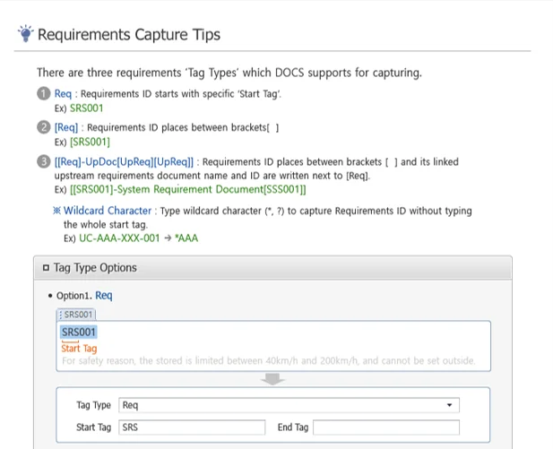 |
|
Test Plan/Procedure 문서 작성 시 공통적으로 입력되는 Test Feature/Test Case 접두사(Prefix)+괄호([], <>)로 Test Feature/Test Case 영역을 식별하는 기능이다.
Test Feature/Test Case 아이디 영역([접두사] 또는 <접두사>로 시작하는 문장) 다음에 나오는 하나의 문단을 Test Feature/Test Case 내용(Description)으로 식별한다.
① ‘Test Feature’ 탭의 ‘Test Feature’ 그룹 또는 ‘Test Case’ 탭의 ‘Test Case’그룹에서 ‘Capture’ 버튼을 클릭한다.
② ‘Tag Type’항목에서 ‘[Req]’또는 ‘<Req>’를 선택한다.
③ ‘Start Tag’ 항목에 Test Feature/Test Case 식별자의 접두사(Prefix)를 입력한다.
④ ‘Scanning’ 버튼을 클릭한다.
⑤ ‘Capture’ 버튼 또는 ‘OK’ 버튼을 클릭한다.
|
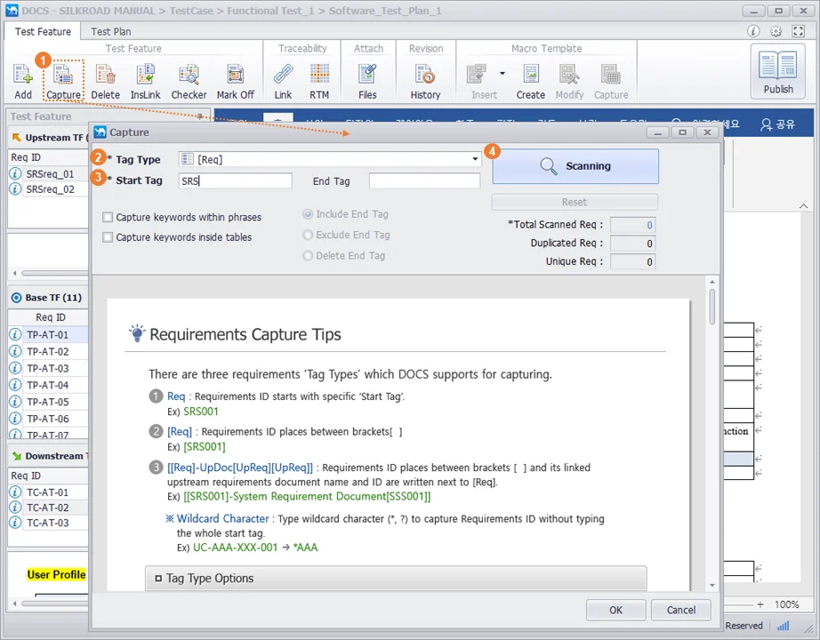 |
현재 문서의 Test Feature/Test Case 등록과 해당 Test Feature/Test Case가 추적하는 상위 요구사항과의 추적성 연결을 동시에 할 수 있다.
Test Feature/Test Case 아이디 입력 시, 해당 Test Feature/Test Case와 추적성을 갖는 상위요구사항 문서명, 상위 요구사항 아이디를 규칙에 따라 작성하고 해당 영역을 자동으로 식별하여 Test Feature/Test Case 및 상위 요구사항 추적성 정보를 등록한다.
① ‘Test Feature’ 탭의 ‘Test Feature’ 그룹 또는 ‘Test Case’ 탭의 ‘Test Case’ 그룹에서 ‘Capture’ 버튼을 클릭한다.
② ‘Tag Type’항목에서 ‘[[Req]-UpDoc[UpReq], [UpReq]]’ 또는 ‘<<Req>-UpDoc<UpReq>, <UpReq>>’를 선택한다.
- Req : 현재 문서에 등록된 요구사항 아이디
- UpDoc : 상위 요구사항이 존재하는 문서명(약어로 대체 가능)
- UpReq : 상위 요구사항 아이디
③ ‘Start Tag’ 항목에 요구사항 식별자의 접두사(Prefix)를 입력한다.
④ ‘Scanning’ 버튼을 클릭한다.
(동일한 이름의 상위 문서가 프로젝트 내 여러 개 존재할 경우 ‘Document selection’ 창이 생성된다. 대상 상위문서를 선택하고 ‘OK’ 버튼을 클릭한다.)
⑤ ‘Capture’ 버튼 또는 ‘OK’ 버튼을 클릭한다.
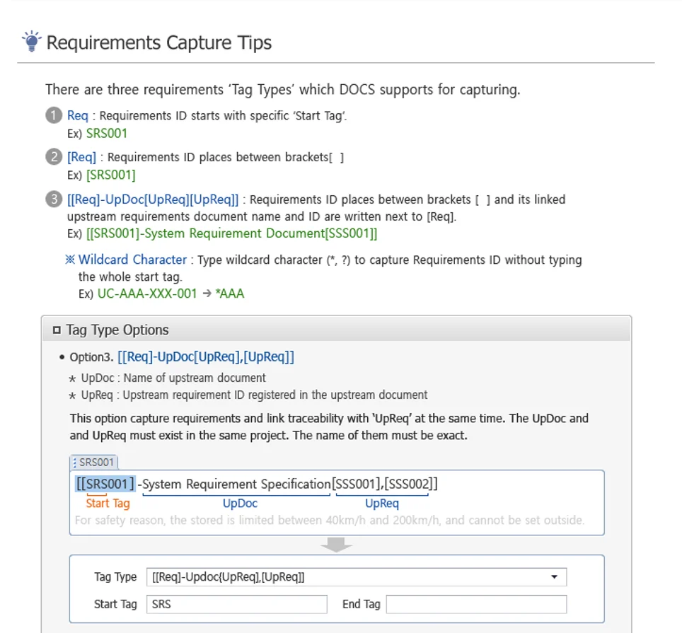 |
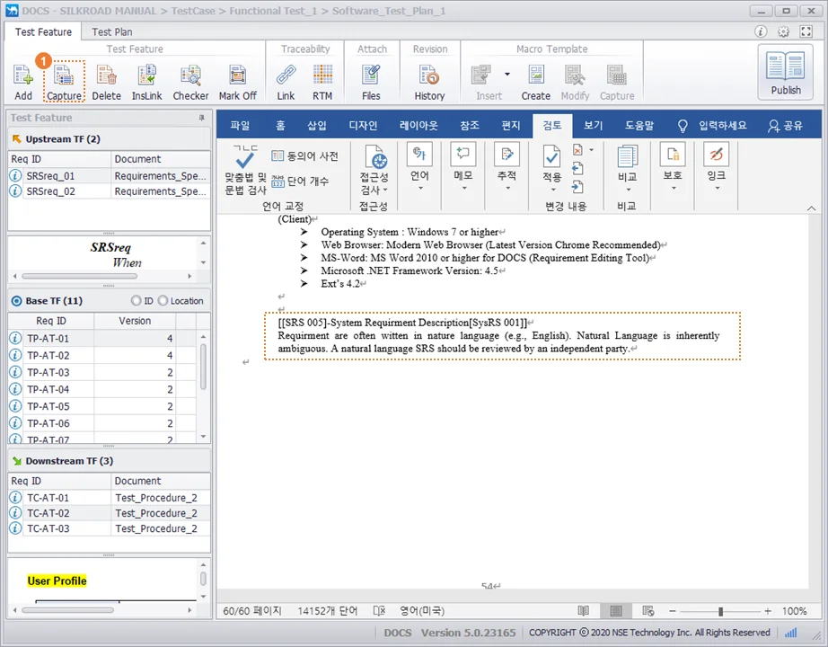 |
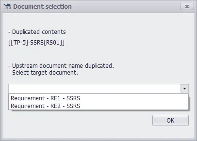 |
상위 요구사항, Test Feature의 식별자를 조회할 수 없는 경우에는 아래 그림과 같이 ‘Missing Upstream Req. ID’항목에 작성된 상위 요구사항, Test Feature 식별자가 출력된다.
|
문서 내용 중 Keyword를 검색하여 Keyword가 포함된 문단을 요구사항으로 등록한다.
① ‘Test Feature’ 탭의 ‘Test Feature’ 그룹 또는 ‘Test Case’ 탭의 ‘Test Case’ 그룹에서 ‘Capture’ 버튼을 클릭한다.
② ‘Tag Type’항목에서 ‘keyword’를 선택한다.
③ keyword를 입력한다.
④ ‘Scanning’ 버튼을 클릭한다.
⑤ ‘Capture’ 버튼 또는 ‘OK’ 버튼을 클릭한다.
|
Test Feature/Test Case 아이디 접두사를 모두 입력하지 않고, ‘*’ 또는 ‘?’ 문자를 사용하여 생략된 접두사를 대체해 요구사항 아이디를 식별할 수 있다. ‘?’는 사용된 한 자리의 접두사를 대체하고 *는 사용된 위치를 기준으로 앞/뒤 접두사를 대체한다.
① ‘Test Feature’ 탭의 ‘Test Feature’ 그룹 또는 ‘Test Case’ 탭의 ‘Test Case’ 그룹에서 ‘Capture’ 버튼을 클릭한다.
② ‘Tag Type’항목을 선택한다.
③ ‘Start Tag’ 항목에 식별자의 접두사(Prefix) 입력 시, Test Feature/Test Case 식별자의 접두사를 모두 입력하지 않고, * 또는 ? 문자를 입력한다.
④ ‘Scanning’ 버튼을 클릭한다.
⑤ ‘Capture’ 버튼 또는 ‘OK’ 버튼을 클릭한다.
|
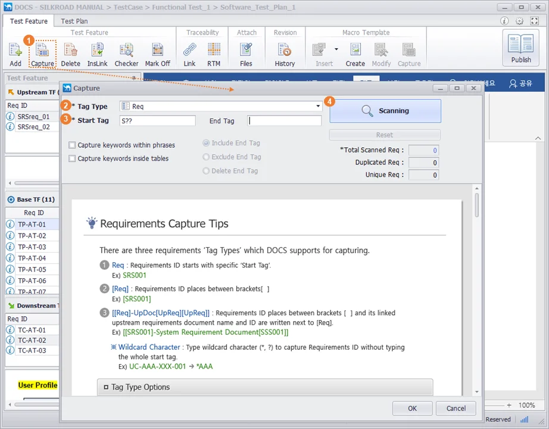 |
등록할 Test Feature/Test Case 여러 문단으로 이루어져 있거나 내용에 표, 그림, 수식 등을 포함하고 있는 경우 정확한 영역을 식별하도록 End Tag를 사용한다. 내용이 끝나는 영역에서 엔터(Enter)를 눌러 개행한 후 End Tag를 입력한다. 요구사항 식별 시 옵션을 통해 본문에 입력된 End Tag를 요구사항 내용에 포함/제외/삭제할 수 있다.
① ‘Test Feature’ 탭의 ‘Test Feature’ 그룹 또는 ‘Test Case’ 탭의 ‘Test Case’ 그룹에서 ‘Capture’ 버튼을 클릭한다.
② ‘Tag Type’항목을 선택한다.
③ ‘Start Tag’항목에 Test Feature/Test Case 식별자의 접두사(Prefix)를 입력한다.
④ ‘End Tag’ 항목에 본문에 사용된 End Tag를 입력한다.
⑤ ‘Scanning’ 버튼을 클릭한다.
⑥ ‘Capture’ 버튼 또는 ‘OK’ 버튼을 클릭한다.
|
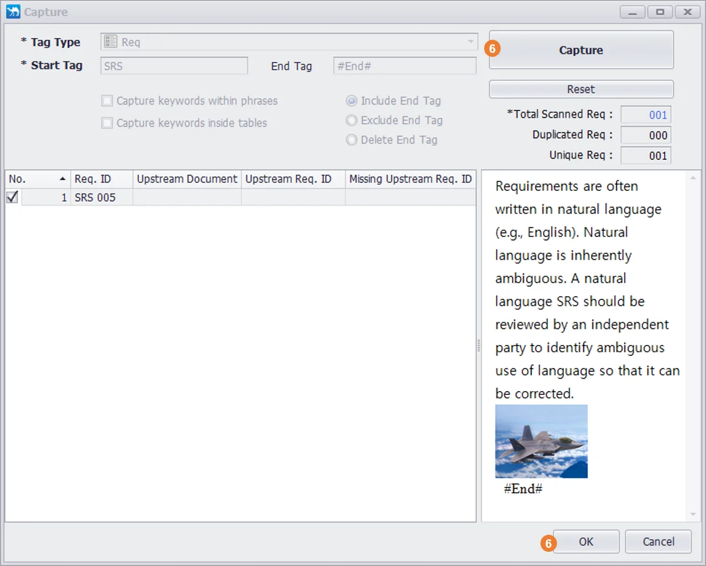 |
Include End Tag : ‘End Tag’를 포함해 Test Feature/Test Case 내용으로 등록한다. |
Test Plan/Procedure 문서의 문단 내에서 작성된 Test Feature/Test Case 아이디와 내용을 식별하여 자동 등록 하는 기능이다. ‘Req’ 접두사(Prefix) 기반 Tag Type은 문단 내 자동 등록을 지원하지 않는다.
① ‘Test Feature’ 탭의 ‘Test Feature’ 그룹 또는 ‘Test Case’ 탭의 ‘Test Case’ 그룹에서 ‘Capture’ 버튼을 클릭한다.
② ‘Tag Type’항목을 선택한다. ([Req],<Req>, [[Req]-UpDoc[UpReq]], <<Req>-UpDoc<UpReq>>)
③ ‘Start Tag’ 항목에 Test Feature/Test Case 식별자의 접두사(Prefix)를 입력한다.
④ ‘Capture keywords within phrases’체크박스를 클릭한다.
⑤ ‘Scanning’ 버튼을 클릭한다.
⑥ ‘Capture’ 버튼 또는 ‘OK’ 버튼을 클릭한다.
|
|
|
Test Plan/Procedure 문서의 표 안에 작성된 Test Feature/Test Case 아이디와 내용을 식별하여 자동 등록하는 기능이다.
Tag Type 접두사(Prefix) 기반(Req), 키워드 기반([Req]), Test Feature/Test Case 내용 및 상위 요구사항, 추적성 정보 기반([Req-UpDoc[UpReq]])를 사용해 표 내 Test Feature/Test Case를 식별할 수 있다.
① ‘Test Feature’ 탭의 ‘Test Feature’ 그룹 또는 ‘Test Case’ 탭의 ‘Test Case’ 그룹에서 ‘Capture’ 버튼을 클릭한다. (Req, [Req], <Req>, [[Req]-UpDoc[UpReq]], <<Req>-UpDoc<UpReq>>)
② ‘Tag Type’항목을 선택한다.
③ ‘Start Tag’ 항목에 요구사항 식별자의 접두사(Prefix)를 입력한다.
④ ‘Capture keywords inside tables’체크박스를 클릭한다.
⑤ ‘Scanning’ 버튼을 클릭한다.
⑥ ‘Capture’ 버튼 또는 ‘OK’ 버튼을 클릭한다.
Test Feature/Test Case 아이디와 내용은 하나의 셀에 입력되어야 한다. |
|
|
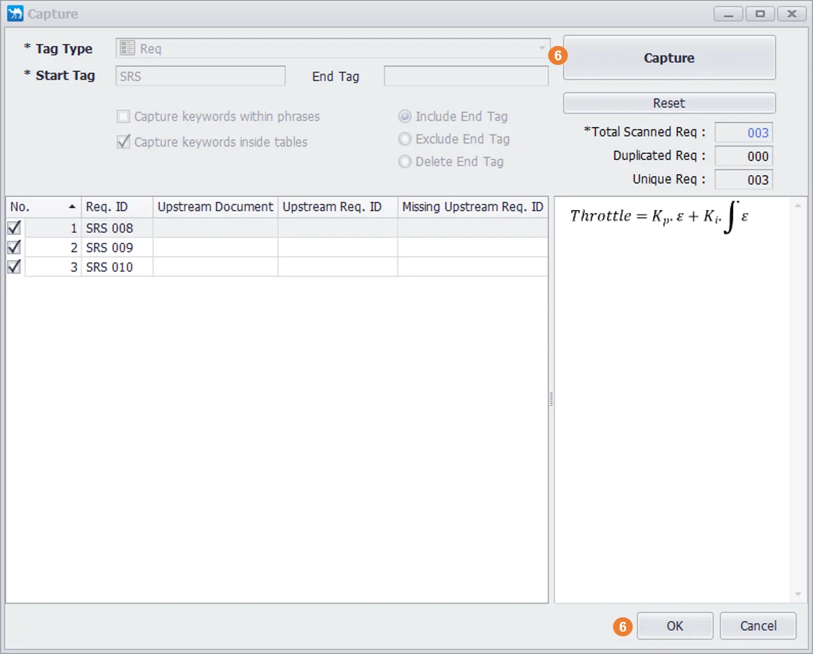 |
Test Feature/Test Case가 표(셀)안에 위치하고, 문장 중간에 위치할 때 ‘Capture keywords within phrase’와 ‘Capture keywords inside tables’를 모두 체크하여 Test Feature/Test Case를 식별할 수 있다.
① ‘Test Feature’ 탭의 ‘Test Feature’ 그룹 또는 ‘Test Case’ 탭의 ‘Test Case’ 그룹에서 ‘Capture’ 버튼을 클릭한다.
② ‘Tag Type’항목을 선택한다.
③ ‘Start Tag’ 항목에 접두사(Prefix)를 입력한다.
④ ‘Capture keywords within phrases’체크박스를 클릭한다.
⑤ ‘Capture keywords inside tables’체크박스를 클릭한다.
⑥ ‘Scanning’ 버튼을 클릭한다.
⑦ ‘Capture’ 버튼 또는 ‘OK’ 버튼을 클릭한다.
|
|
|
Test Case의 테스트 실행 결과 입력을 위해 Test Case 결과 입력란을 식별 한다. Add, Capture를 이용한 Test Case 등록 시 자동으로 정해진 키워드를 결과 입력란으로 식별해 식별된 카운트를 표시한다. 키워드 인식을 수동으로 하고자 하는 경우 DOCS 내 Test Case 탭에서 Pass/Fail 버튼을 클릭 해 등록된 Test Case 모두의 키워드 인식을 다시 진행할 수 있다. 인식된 키워드는 Test Execution 생성 시 테스트 결과를 입력할 수 있는 체크박스로 표시된다.
① 키워드가 입력된 Test Case를 Add 또는 Capture 해 등록한다.
② 수동 Test Case의 결과 입력 필드 식별을 위하여 ‘Test Case’ 탭의 Pass/Fail 버튼을 클릭한다.
③ Test Case 실행 결과 입력 필드가 식별 되어있는 경우 ‘Test Case’의 ‘P/F’ 칼럼에 개수가 표시된다.
④ ‘Pass/Fail Test Step’에 개수가 표시되어 있는지 확인한다.
|
결과 입력 인식을 위한 키워드는 Pass/Fail을 기본 값으로 하고 DOCS의 Setting에서 사용자가 변경할 수 있다.(예. Success/Failure 등) Pass/Fail을 등록된 Test Case 내 추가/삭제 시 P/F에 실시간 반영된다. |
Test Feature/Test Case 내용 수정은 콘텐츠컨트롤 내에서 수행해야 한다. 기존에 등록되어 저장(Publish)된 Test Feature/Test Case의 내용을 수정하면, ‘Base TF’또는‘Base TC’목록에서 해당 Test Feature/Test Case의 version이 한 단계 상승하며, 이에 대한 알림 아이콘 ‘ ’이 표시된다. Test Feature/Test Case의 버전은 해당 Test Plan/Procedure 문서를 저장(Publish)하면 반영된다.
’이 표시된다. Test Feature/Test Case의 버전은 해당 Test Plan/Procedure 문서를 저장(Publish)하면 반영된다.
① 수정 할 Test Feature/Test Case 영역을 클릭하여 내용을 수정한다.
② 수정이 완료되면 버전 상승 알림 아이콘 ‘’(기존 1버전이상 일 경우)이 표시된다.
|
Test Feature/Test Case의 속성 정보(Priority, Category, Search Tag 등)를 수정하는 기능이며, 수정 시 Test Feature/Test Case의 버전이 증가한다. 수정된 사항은 해당 문서를 최종 저장(Publish)하면 반영된다.
① 등록된 Test Feature/Test Case 목록의 정보창(i) 버튼을 클릭한다.
② 문서의 속성(Properties) 정보를 변경한다.
③ ‘OK’ 버튼을 클릭한다.
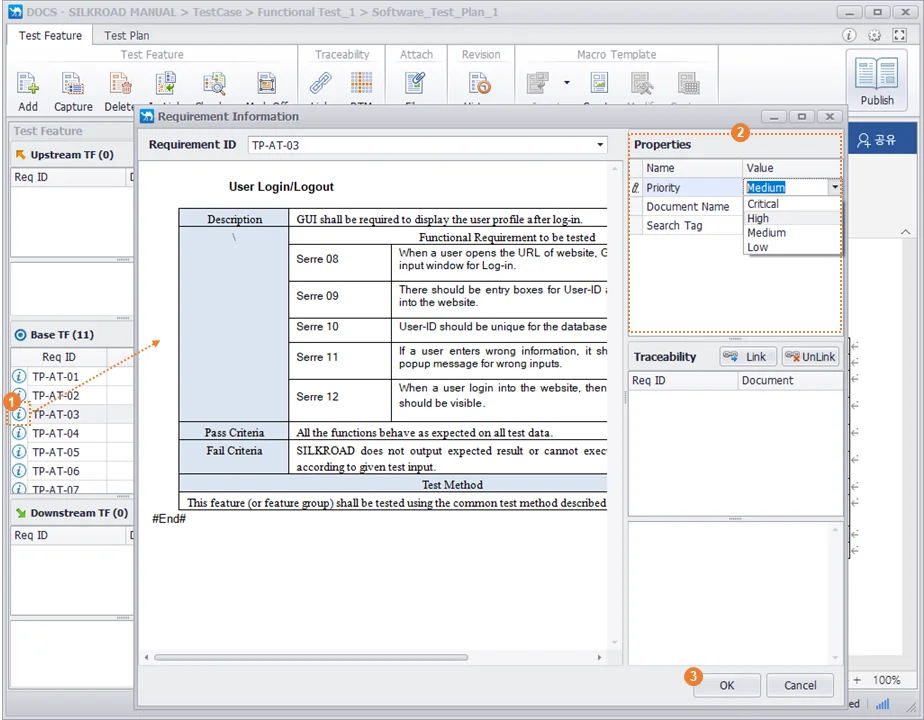 |
등록된 Test Feature/Test Case를 삭제하는 기능이다. 문서 본문에 작성된 Test Feature/Test Case 내용은 삭제되지 않고 SILKROAD 서버에 저장된 Test Feature/Test Case 정보만 삭제된다. 본문에서 Test Feature/Test Case로 등록된 내용 영역의 콘텐츠컨트롤을 삭제하는 경우, 해당 Test Feature/Test Case가 삭제된다. 삭제된 Test Feature/Test Case는 Publish 완료 시 반영된다.
① Base TF/TC 목록에서 삭제하고자 하는 Test Feature/Test Case 식별자를 클릭한다.
② ‘Test Feature’ 탭의 ‘Test Feature’ 그룹 또는‘Test Case’ 탭의 ‘Test Case’그룹에서 ‘Delete’ 버튼을 클릭한다. 또는 마우스 Base TF/TC 선택 상태에서 우 클릭하여 콘텍스트메뉴에서 ‘Delete’를 선택한다.
③ ‘OK’ 버튼을 클릭한다.
Base TF/TC 목록에서 Test Feature/Test Case 선택 시, Shift, Ctrl을 이용한 다중 선택이 가능하다. |
|
사용자 PC에 있는 파일을 선택하여 개별 Test Feature/Test Case 항목의 첨부파일로 등록한다. 첨부된 파일은 기능시험 관리시스템의 Test Feature/Test Case 정보 창 ‘Attachments’ 탭에서도 열람/다운로드할 수 있다.
① DOCS 화면 좌측 중앙 ‘Base TF’또는‘Base TC’목록에서 파일을 첨부할 Test Feature를 선택한다.
② ‘Test Feature’탭 또는 ‘Test Case’탭의 ‘Attach’그룹에서 ‘Files’버튼을 클릭한다.
③ ‘Attachments’화면에서 좌측 상단의 ‘Browse’버튼을 클릭한다.
④ 윈도우즈 탐색기에서 첨부할 파일을 선택한다.
⑤ ‘열기’버튼을 클릭한다.
⑥ ‘OK’버튼을 클릭한다.
⑦ 아이콘 ‘File’ 우측에 첨부된 파일 개수가 표시된다.
|
Test Feature/Test Case에 첨부된 파일을 삭제하는 기능이다.
① DOCS 화면 좌측 중앙 ‘Base TF’또는‘Base TC’목록에서 첨부파일을 삭제할 Test Feature/Test Case를 선택한다.
② ‘Test Feature’또는 ‘Test Case’탭의 ‘Attach’그룹에서 ‘Files’버튼을 클릭한다.
③ ‘Attachments’화면의 첨부파일 목록에서 삭제할 파일은 선택한다.
④ 우측 상단 ‘Remove’버튼을 클릭한다.
|
Test Feature/Test Case의 버전별 변경 이력을 테이블로 표시한다. 해당 정보는 Test Feature/Test Case의 일자, 버전, 담당자 및 설명과 추적성 정보(Upstream)를 기반으로 생성한다. 테이블을 복사하여 문서 내에 붙여 넣을 수 있다.
① ‘Base TF’또는‘Base TC’목록에서 변경 이력을 확인하고자하는 Test Feature/Test Case를 선택한다.
② ‘Test Feature’또는 ‘Test Case’탭의 ‘Revision’그룹에서 ‘History’버튼을 클릭한다.
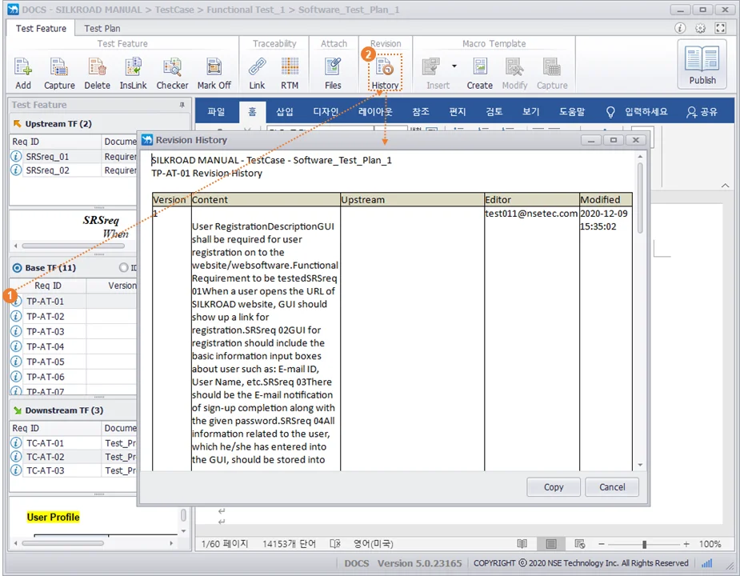 |
‘Revision History’화면에서 ‘Copy’버튼을 클릭하면 내용을 클립보드에 복사할 수 있으며, 복사된 내용은 문서에서 붙여넣기(Ctrl+V) 할 수 있다. |
Test Feature/Test Case로 등록된 영역을 표시하는 기능이다. 식별된 영역을 아이디플래그 ( )로 표시하여 문서 내 Test Feature/Test Case 영역을 쉽게 식별한다.
)로 표시하여 문서 내 Test Feature/Test Case 영역을 쉽게 식별한다.
① (Test Feature/Test Case 아이디 플래그를 표시하고 싶은 경우) ‘Test Feature’탭의 ‘Test Feature’그룹 또는‘Test Case’탭의‘Test Case’그룹에 있는 ‘Mark Off’버튼을 클릭한다.
② (Test Feature/Test Case 아이디 플래그를 감추고 싶은 경우) ‘Test Feature’탭의 ‘Test Feature’그룹 또는‘Test Case’탭의 ‘Test Case’그룹에 있는 ‘Mark On’버튼을 클릭한다.
|
기본적으로 Test Feature/Test Case 영역은 Test Feature/Test Case 아이디 플래그가 표시되지 않는 ‘Mark Off’상태이다. |
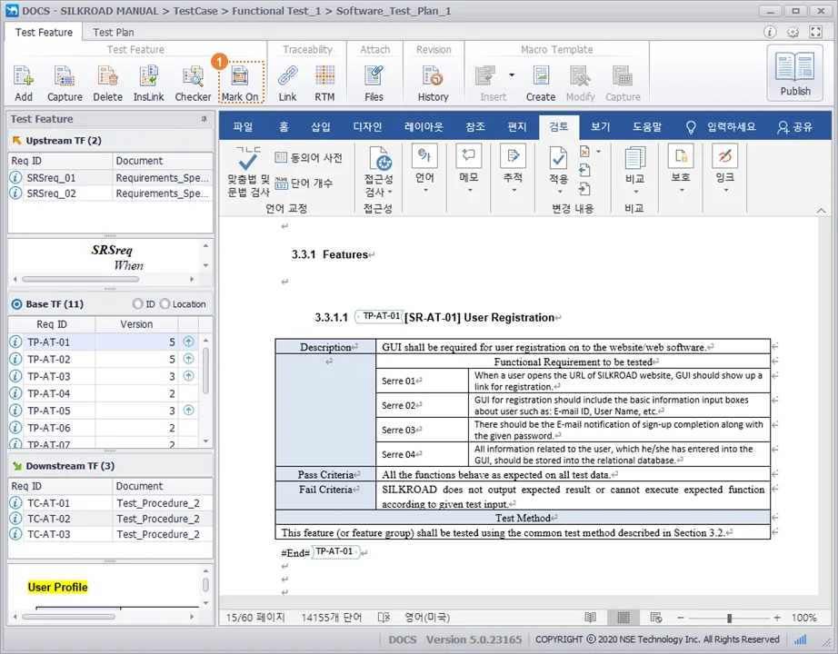 |
등록된 Test Feature/Test Case 본문 콘텐츠 컨트롤 내에 추적성 연결된 상위 요구사항, Test Feature 정보를 텍스트로 추가한다.
① Test Feature/Test Case의 콘텐츠컨트롤 내 정보 삽입 위치를 클릭한다.
② ‘Test Feature’탭의 ‘Test Feature’그룹 또는 ‘Test Case’탭의 ‘Test Case’그룹에서 ‘InsLink’버튼을 클릭한다.
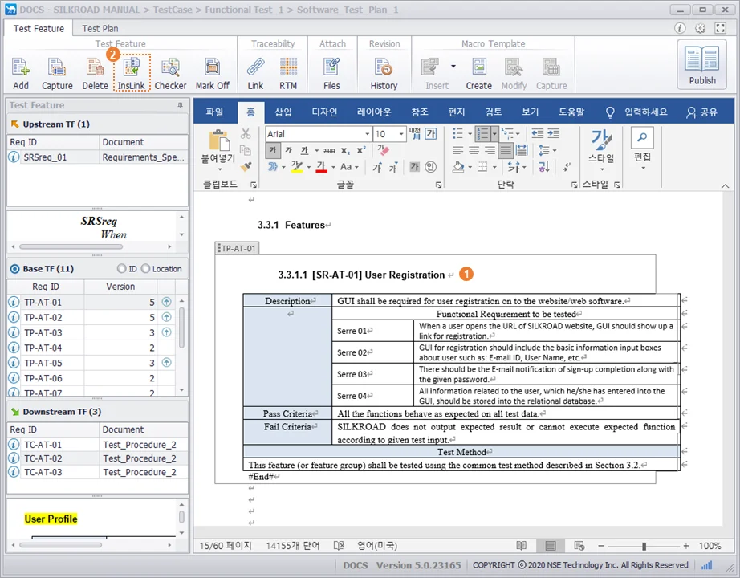 |
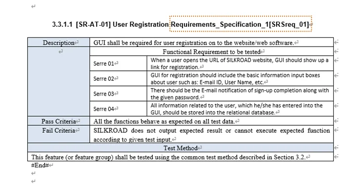 |
프로젝트 내 현재 문서의 Test Feature/Test Case와 동일한 아이디를 가진 Test Feature/Test Case를 검색해 정보를 제공한다.
① ‘Test Feature’탭의 ‘Test Feature’그룹 또는 ‘Test Case’탭의 ‘Test Case’그룹에서‘Checker’버튼을 클릭한다.
- 좌측 목록에 현 문서에 등록된 Test Feature/Test Case, 우측에 동일 아이디를 사용하는 Test Feature/Test Case 표시
② 좌측의 Test Feature/Test Case 아이디를 더블클릭하면 Test Feature/Test Case명을 개별적으로 변경할 수 있다.
③ ‘OK’버튼을 클릭해서 저장한다.
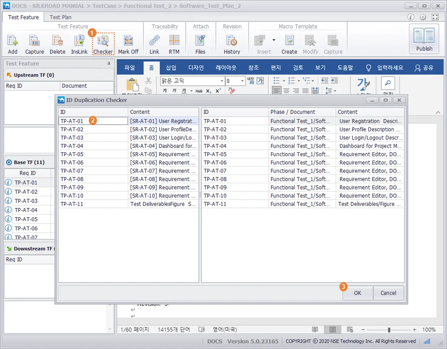 |
요구사항 또는 Test Feature, Test Case간 추적성을 연결하는 기능이다. 추적성을 연결하기 위해서는 반드시 등록된 요구사항 및 Test Feature가 존재해야 하며, 하위 문서는 1개 이상의 상위 문서와 추적성을 연결할 수 있다.
DOCS에서 추적성은 하위 문서에서 상위 문서로 연결된다.
① ‘Test Feature’또는 ‘Test Case’탭의 ‘Traceability’ 그룹에서 ‘Link’ 버튼을 클릭한다.
② ‘Test Feature Traceability Editor’또는 ‘Test Case Traceability Editor’ 화면이 생성되면 좌측 ‘Upstream Requirements’ 영역에서 ‘Backward Link’ 버튼을 클릭한다.
③ ‘Selection of Upstream Document’ 화면에서 상위 문서가 존재하는 프로젝트 및 Phase(또는 Folder)를 선택한다.
④ 추적성을 연결 할 문서를 선택한다.
⑤ ‘OK’ 버튼을 클릭한다.
⑥ 우측 하위 Test Feature/Test Case를 클릭해 좌측 상위 요구사항, Test Feature로 드래그한다.
⑦ ‘OK’ 버튼을 클릭한다.
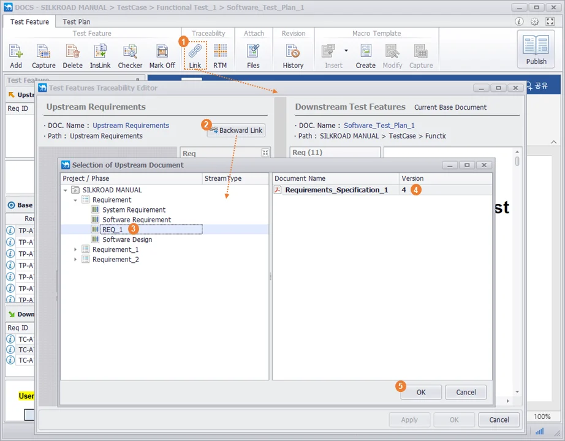 |
|
다중 선택(Shift, Ctrl 이용)을 이용해 한번에 여러 개의 하위/상위 아이템을 선택하고 드래그&드롭을 이용해 추가, 제거할 수 있다. 추적성 연결을 삭제/취소할 시, 대상 Test Feature/Test Case를 좌측 상위 요구사항, Test Feature 목록에서 선택해 우측 하위 Test Feature/Test Case 방향으로 드래그하거나 ‘>’ 버튼을 클릭한다. ‘Apply’ 버튼 클릭 시, 사용자가 설정한 추적성 연결 정보가 저장되며 연속적으로 다른 문서의 요구사항과 추적성을 연결할 수 있다. |
등록된 Test Feature/Test Case 개별 정보창을 통해 추적성을 연결하는 기능이다.
① ‘Base T.F’또는‘Base T.C’목록에서 Test Feature/Test Case의 정보창(Information) 버튼을 클릭한다.
② ‘Requirement Information’창 Traceability 영역에 있는 ‘Link’버튼을 클릭한다.
③ ‘Add Traceability’창 Document 영역에서 상위 요구사항이 존재하는 메뉴 및 문서를 선택한다.
④ ‘Add Traceability’창 Requirement 목록에서 추적성을 연결 할 요구사항 또는 Test Feature를 선택한다.
⑤ ‘OK’버튼을 클릭한다.
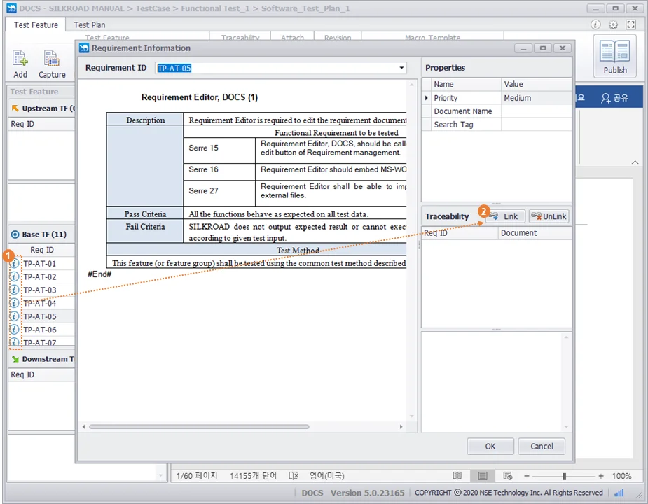 |
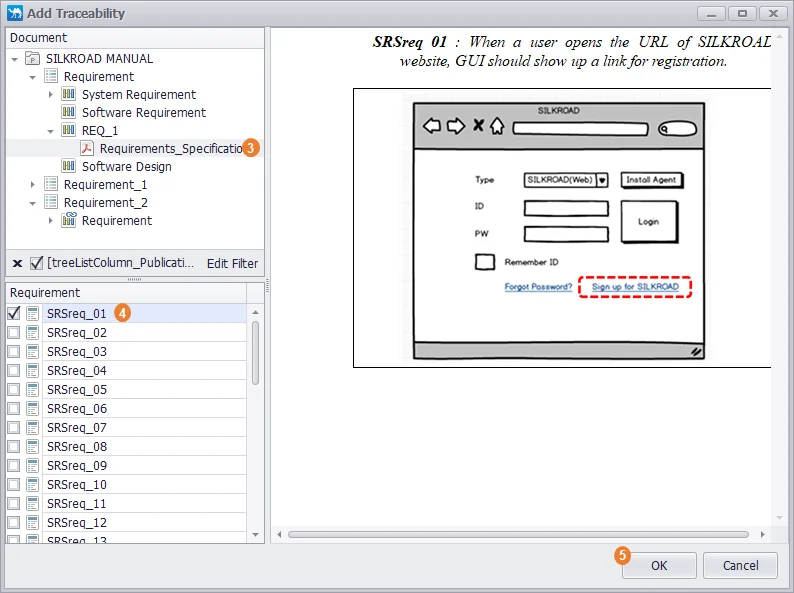 |
추적성 매트릭스는 현재 DOCS에 작업 중인 문서를 기준으로 상상·하위 추적성 테이블을 자동으로 생성해주는 기능이다.
① ‘Test Feature’또는‘Test Case’탭의 ‘Traceability’ 그룹에서 ‘RTM’ 버튼을 클릭한다.
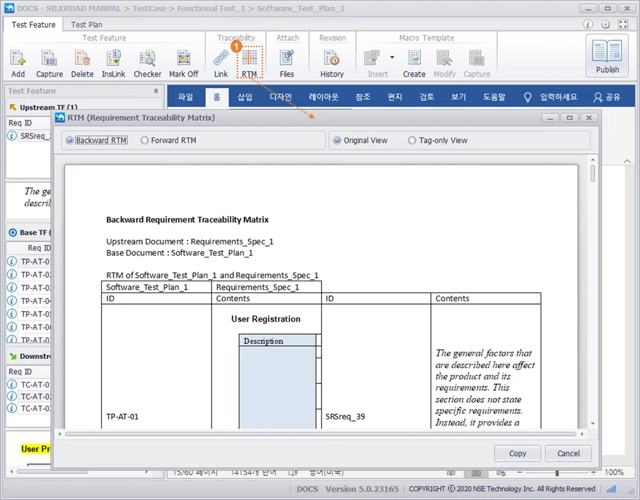 |
Backward RTM : 현재 DOCS에서 보고 있는 문서와 상위 문서와의 추적성 관계 표시 Original View : 요구사항, Test Feature/Test Case 내용에 포함된 그림, 표, 수식, 텍스트 등 모든 정보를 보여주는 RTM ‘Copy’ 버튼을 클릭하여 요구사항 또는 Test Feature-Test Case 추적성 테이블을 복사하고 Test Plan/Procedure 문서 내에 붙여 넣을 수 있다. |
번호 | 메시지 | 설명 | 해결방안 |
|---|---|---|---|
1 | The same data exists. | 이미 같은 데이터가 존재함 | |
2 | Select items to delete. | 선택된 삭제 대상이 없음 | |
3 | Failed to get body area of document. please try again. | 문서의 Body 영역을 가져오지 못하였습니다. 다시 시도해 주세요. | |
4 | Data does not exist. | 불러올 데이터가 없습니다. | |
5 | Select node. | 노드 선택 안됨 | |
6 | Do you want to delete a selected document(s)? | 선택한 문서를 삭제할지 여부 | |
7 | Failed to connect to server. | 서버에 접속할 수 없습니다. | |
8 | Failed to log in to server. | 로그인에 실패함 | |
9 | An element that can not be captured is selected among captured objects. | 캡쳐된 대상 중, 캡쳐하지 못하는 요소가 선택되어 있습니다. | |
10 | Total {0} macro requirements were captured! | 총 {0} 개의 매크로 요구사항이 등록되었습니다! | |
11 | No element matching the macro template was found. | 매크로 템플릿과 일치하는 요소를 찾지 못함. | |
12 | There is no registered macro template data. | 등록되어 있는 매크로 템플릿 데이터가 없습니다. | |
13 | The table does not exist in the macro template. Please check the macro template. | 매트로 템플릿 안에 테이블이 존재하지 않습니다. 매크로 템플릿을 다시 확인해 주세요. | |
14 | 'Modify' cannot be executed at the current cursor location. | 'Modify'가 현재 커서 위치에서는 실행되지 않습니다. | |
15 | Place the cursor outside a requirement area and try again. | 현재 위치에 매크로 템플릿 수정 영역을 생성하지 못함. 영역 재지정 후 다시 시도해 주세요. | |
16 | Do you want to close this document? | 현재 문서를 닫으시겠습니까? | |
17 | The document has been changed. Doyouwanttopublishit? | 변경된 내용이 있습니다. Publish 하시겠습니까? | |
18 | There is no opened document. | 열려있는 문서가 없음 | |
19 | Failed to delete document. | 문서를 삭제하지 못함 | |
20 | Do you want to delete this document? | 현재 문서를 삭제 하시겠습니까? | |
21 | Do you want to delete sub document(s) as well? | Sub Document를 삭제할지 여부 | |
22 | There is no working document. | 현재 작업중인 문서가 없습니다. | |
23 | The document is already opened. DOCS will close the current document. | 이미 열려있는 문서가 있어서 닫음 | |
24 | Failed to load document. | 문서를 가져오지 못함 | |
25 | Failed to download 'Reuse' document. | Reuse 문서를 다운로드 하는데 실패함 | |
26 | Do you want to restore existing requirement data? | 요구사항 데이터를 복구하시겠습니까? | |
27 | Do you want to restore existing test case data ? | 테스트케이스 복구 여부 | |
28 | This document has no revision. | 이 문서는 개정되지 않았습니다. | |
29 | This document was 'local saved' before it was published. Loadthedocumentasanewdocument? | 0버전이거나 Publish가 되지 않는 문서이므로 새로운 문서로 생성 | |
30 | Loaded successfully. | 문서 로드 성공 | |
31 | The loaded document version is not the latest version. | Load 할 문서의 버전이 최신버전보다 낮음 | |
32 | This document has been changed since saved. Doyouwanttoapplydocument? | Load 문서가 마지막 버전보다 더 낮은 버전일 경우 | |
33 | Check the changes between two versions and load again. | Load 할 문서버전이 낮은 경우 Load를 취소함 | |
34 | Successfully saved. | Local Storage 저장 성공 | |
35 | Do you want to close without register? | 작업중인 Macro Template 을 취소하고 나가시겠습니까? | |
36 | Please turn off Track Changes to use Macro Template. | Macro Template 기능을 사용하기 위해 변경사항추적기능을 꺼주세요. | |
37 | Failed to export 'Macro Template'. | 매크로 템플릿을 Export 하지 못함 | |
38 | This Document saved to {0} | {0} 파일로 Export 하였습니다. | |
39 | Failed to import 'Macro Template'. | 매크로 템플릿을 Import 하지 못함 | |
40 | Macro Template with the same name exists. Please set a different name. | 같은 이름을 가지는 Macro Template 이 존재합니다. 다른 이름으로 설정해 주세요. | |
41 | Enter the Macro Template name. | 저장할 매크로 템플릿 이름을 입력해 주세요. | |
42 | Do you want to register the template you are working on as a requirement? | 현재 작업중인 템플릿을 요구사항으로 등록하시겠습니까? | |
43 | Current Macro Template has been registerd to server. | 매크로 템플릿이 서버에 저장되었습니다. | |
44 | A file name can't contain any of the following characters.\n \\ / : * ? \" < > | | 특수 문자가 포함되어있음 | |
45 | This document has not been published yet. Publishthedocumentfirstbeforeexportit. | Publish 이력이 없는 문서 Export 제한함 | |
46 | This Document saved to {0} | 해당 문서가 {0} 파일로 저장됨 | |
47 | It can not update since information of document was deleted. | 문서 정보가 삭제됨 | |
48 | This is document exported from SILKROAD. Doyouwanttoupdatethedocumentorcreateanewdocument? | SILKROAD 에서 Export 된 문서입니다. 업데이트하시겠습니까?새로문서를생성하시겠습니까? | |
49 | This document has been changed since exported. Do you want to apply document? | 문서의 버전이 import할 문서 버전 보다 높음 | |
50 | Check the changes between two versions and import again. | 문서 버전이 더 낮으므로 Import 취소했을 경우 재시도 | |
51 | The document information was not received from the server. | 서버로부터 문서 정보를 받지 못함 | |
52 | Enter password to open file. After importing into DOCS, the file be comesun locked. | 암호를 입력 암호화된문서암호해제하여저장 | |
53 | There is no document information to update. Do you want to register as a new document? | Update 할 문서 정보가 없습니다. 새 문서로 등록하시겠습니까? | |
54 | This requirement is already registered. | Content Control 내부에는 요구사항을 등록할 수 없습니다. | |
55 | This requirement is already registered. | Content Control 내부에는 요구사항을 등록할 수 없습니다. | |
56 | The new requirement is not selected. Please confirmit again. | 요구사항 영역이 설정되지 않았습니다. 다시 확인해 주세요. | |
57 | You can not specify this area as a requirement. | 해당 영역을 요구사항으로 지정할 수 없습니다. | |
58 | Select requirement to add 'Attachment'. | 선택된 요구사항이 없음 | |
59 | Select one item only. | 두개 이상의 요구사항이 선택되었음. 한개만 선택할 것 | |
60 | You can not proceed with capture because Word's 'Track Changes' feature is enabled. To enable capture, please disable the feature. | 워드의 '문서 내역 추적' 기능이 활성화 되어 있어 캡쳐를 진행할 수 없습니다.\r\n캡쳐를 진행하려면 해당 기능을 비활성화 해 주세요 | |
61 | Total {0} requirements were modified! | 총 {0} 개의 이름이 변경되었습니다! | |
62 | This requirement has no revision. | 해당 요구사항은 리비전이 없음 | |
63 | Select one item only. | 하나만 선택하세요. | |
64 | This document already has master document. | 이미 마스터 문서를 가지고 있음 | |
65 | None exist sub-document. | 서브 문서가 존재하지 않음 | |
66 | Debug mode is enabled. | 디버그 모드가 활성화 되었습니다. | |
67 | The document has been changed. Doyouwanttopublishit? | 변경된 사항있습니다. Publish 하시겠습니까? | |
68 | Do you want to close DOCS? | 문서를 닫으시겠습니까? | |
69 | Do you want to unlock this document and close DOCS? | 문서를 잠금 풀고 닫으시겠습니까? | |
70 | Error occurred during 'Create' new document. Try again. | 문서를 새로 생성하는 도중 에러가 발생하였습니다. 다시 시도해 주십시오 | |
71 | Error occurred during 'Open' document. The document is invalid or damaged. | 문서를 배치하는 도중 에러가 발생했습니다. 잘못된 문서이거나, 손상된 문서입니다. | |
72 | The document is locked for editing by another user. | 이 문서는 다른 사람이 작업중이므로 편집할수 없음 | |
73 | It can not update since information of document was deleted. | 문서가 삭제되었습니다. Publish를 할 수 없습니다. | |
74 | You are not authorized to open this document. Contact your manager for more information. | 문서에 대한 권한이 없습니다. 관리자에게 문의해 주세요. | |
75 | An unhandled exception occurred. DOCS will be closed after creating dump. | 처리되지 않은 예외가 발생하였습니다. 덤프를 생성하고 프로그램을 종료합니다. | |
76 | There is no MS-Word activated. Activate MS-Word and try again. DOCS will be closed. | 정품 활성화된 워드가 존재하지 않아 DOCS 를 종료합니다. 정품등록된 Word를 준비한 후 재 시도 해주시기 바랍니다. | |
77 | This file can not be opened because the status is | Setting된 Status가 아니기 때문에 문서를 열지 못함 | |
78 | This file is not under change request. | BaseLine에는 존재하지만 Change Request가 생성이 되지 않은 파일 | |
79 | Enter the required field. | 요구한 내용을 입력해 주세요. | |
80 | Failed to publish the document. | 작업중인 문서를 퍼블리시 하지 못함. | |
81 | Successfully published! | Publish가 성공함 | |
82 | This work item has already been updated by other user. | 해당 문서는 최신 버전 보다 낮은 버전 문서 | |
83 | You are not authorized to publish this document. Contact your manager for more information. | 문서에 대한 권한이 없습니다. 관리자에게 문의해 주세요. | |
84 | Cannot contain any of the following characters. (\ / : * ? < > |) | 다음 문자는 사용할 수 없습니다. (\, / : * ? < > |) | |
85 | Fail to relocated. Delete subdocument link. | 링크의 위치 변경 실패로 해당 링크 삭제 | |
86 | It can not insert within linked document. | 링크 문서를 입력할 수 없음. | |
87 | Impossible to insert contents in sub-document. | Impossible to insert contents in sub-document. | |
88 | Selected document is already sub-linked. Relocate the sub-link document at the cursor location? | 해당 위치로 서브 문서를 이동하시겠습니까? | |
89 | Aleady added item | Tag가 이미 존재함 | |
90 | Failed to set location information for requirements. | 요구사항의 Location 정보를 설정하지 못함. | |
91 | Reopen file does not exist. | 다시열 파일이 존재하지 않음 | |
92 | Requirement IDs have been duplicated. | 요구사항 ID가 중복되었습니다. | |
93 | Prefixes can not be captured in phrase. | 구절 안 캡처 모드는 Prefixes 로 수행할 수 없습니다. | |
94 | Requirement IDs marked in red have been duplicated. | 요구사항 아이디가 중복되었습니다. 빨간색으로 표시된 아이디를 확인해 주세요. | |
95 | Total {0} requirements were captured! | 총 {0} 개의 요구사항이 등록되었습니다! | |
96 | Total {0} Test Feature were captured! | 총 {0} 개의 요구사항이 등록되었습니다! | |
97 | An error occurred while checking for duplicate requirements. Please contact the administrator. | 요구사항의 중복을 확인하는 도중 에러가 발생했습니다. 관리자에게 문의해 주세요. | |
98 | A wildcard character( * or ?) can not be used alone. | *,?과 같은 와일드카드 문자는 단독으로 검색 불가 | |
99 | Requirement not found. Please check the Tag options. | 요구사항을 찾지 못함. | |
100 | Do you want to delete selected {0} requirements? | 선택된 요구사항을 삭제 하시겠습니까? | |
101 | Length of document : {0} | 문서의 길이 : {0} | |
102 | Failed to add data due to error occurred during 'Add' Reqiurement | 요구사항을 생성하는 도중 에러가 발생하여 데이터를 추가하지 못함 | |
103 | This requirement ID already exist. Enter the different requirement ID. | 이미 존재하는 요구사항 이름 입니다. | |
104 | Type this requirement ID. | 요구사항 ID를 입력하세요. | |
105 | Failed to load downstream requirements. The document is invalid or damaged. | Downstream 데이터를 가져오는 도중 에러가 발생했습니다. 문서가 잘못되었거나, 손상된 파일입니다. | |
106 | Failed to load upstream requirements. The document is invalid or damaged. | Upstream 데이터를 가져오는 도중 에러가 발생했습니다. 문서가 잘못되었거나, 손상된 파일입니다. | |
107 | Select downstream requirement to create traceability link. | 선택된 자식 데이터가 없음 | |
108 | Select upstream requirement to create traceability link. | 선택된 부모 데이터가 없음 | |
109 | Link is applied. | 링크 적용 | |
110 | Select requirements to delete traceability link. | 선택된 삭제 데이터가 없음 | |
111 | Link is finished. | 링크 완료 | |
112 | Copied to Clipboard | 클립보드로 복사 | |
113 | Successfully copied to clipboard. | 데이터가 클립보드로 복사됨 | |
114 | Changes in Workspace setting will be applied after DOCS is restarted. | Workspace 변경은 DOCS가 재시작 된 후에 반영됩니다. | |
115 | The moment when the changes are being applied. -Workspace:Afterrestart -Autosave:Immediately | Workspace : 재시작 후 반영, Autosave : 즉시 반영 | |
116 | Select item to delete. | 선택된 삭제 대상이 없음 | |
117 | This document has no comparable version. | 비교 대상이 없음 | |
118 | The requirement area has been deleted by the user. | 사용자에 의해 요구사항 영역이 삭제되었습니다. | |
119 | Requirements data that contains invalid data. Delete and re-create it. | 잘못된 데이터를 포함하는 요구사항 데이터입니다. 삭제후 다시 생성해 주십시오. | |
120 | Failed to execute Word. | 워드를 실행하지 못함. | |
121 | Invalid password. | 유효하지 않은 비밀 번호 |
DOCS를 통해 식별·등록한 Test Case의 테스트를 실행하고 결과 값을 입력하는 기능이다. Test Procedure 문서의 버전별 테스트 실행 결과가 관리되며, 버전별 테스트 실행 결과 보고서(PDF)를 생성할 수 있다. 테스트 실행을 위해 테스트 주기(Cycle) 생성이 필요하며, Test Cycle별 테스트 실행 결과 관리가 가능하다.
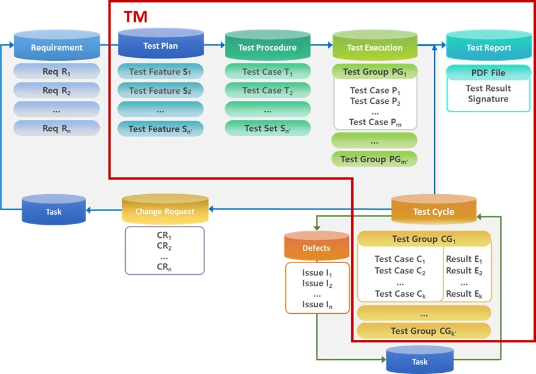 |
|
구분 | 명칭 | 설명 |
| Edit | Execution 수정 버튼 |
| Test Execution/Test Cycle 탭 | Test Execution, Test Cycle 메뉴 탭 |
| 정보 | Execution 정보 표시 |
| Test Group | Execution의 Test Group 및 Test Case 목록 |
| 테스트 실행 버튼 | Test Case의 테스트 실행 시작 버튼 |
Test Execution을 생성해 테스트 그룹별로 테스트 케이스를 추가 하고 테스트 결과 입력 및 회귀 테스트를 진행한다. Execution은 Test Procedure 문서를 선택해 등록된 Test Case를 대상으로 생성한다.
① Document List(또는 폴더, 여백(Root)을 우 클릭)에서 ‘New Item’ 메뉴의 펼침(▼)버튼을 클릭한다.
② ‘Test Execution’ 버튼을 클릭한다.
|
③ ‘Select Test Procedure’ 창에서 ‘Test Procedure’를 선택한다.
④ ‘OK’버튼을 클릭하면 ‘Test Execution’창이 생성된다.
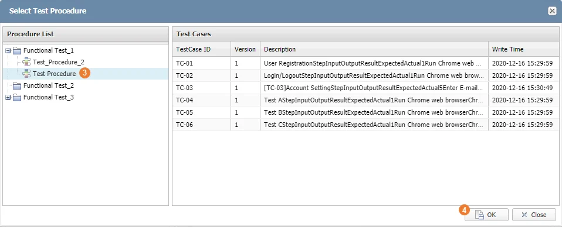 |
⑤ ‘Test Execution’창의 ‘Open Procedure’ 영역에 Test Case 목록이 표시된다.
⑥ Execution 명, 설명 등의 정보를 입력한다.
⑦ ‘Create Test Cycle’을 체크하면 해당 Execution 생성 시 추가한 Test Case에 대한 Cycle이 자동 생성된다.
⑧ ‘Add Group’ 버튼을 클릭해 Test Group을 추가한다.
⑨ ‘Test Group List’ 영역의 ‘Test Group’에 ‘Procedure’ 영역의 Test Case를 드래그하여 추가한다.
⑩ ‘Test Group’에 대한 테스트 실행 담당자(Assignee)를 선택 할 수 있다. 테스트 실행 업무는 담당자의 To-do List에 표시된다.
⑪ ‘OK’ 버튼을 클릭하여 Execution 생성을 완료한다.
|
Test Group명은 우측의 설정버튼을 클릭해 변경한다. Test Group은 우측의 삭제버튼을 클릭해 삭제한다. Assignee는 참여자 개별 추가, 혹은 사용자 그룹으로 일괄 추가가 가능하다. |
생성된 ‘Test Execution’은 수정(Edit)버튼을 클릭해서 수정이 가능하다.
① ‘Test Execution’ 탭에서 ‘Edit’ 버튼을 클릭하면 ‘Execution’창이 생성된다.
② 입력된 정보를 변경한다.
③ ‘Apply’ 또는 ‘OK’버튼을 클릭해 저장한다.
|
Test Case를 추가하는 경우, 새 Test Cycle을 생성해 테스트 결과를 입력한다. |
Test Case의 테스트를 실행하고 결과를 입력할 수 있다. 테스트 실행은 ‘Test Execution’과 ‘Test Cycle’ 탭에서 가능하며, 테스트 결과 Not Run 또는 Pending 상태일 때 ‘Test Run’ 실행이 가능하다.
① ‘Test Execution’ 또는 ‘Test Cycle’ 탭에서 Test Case의 ‘’ 버튼을 클릭하면 ‘Test Run’ 창이 생성된다.
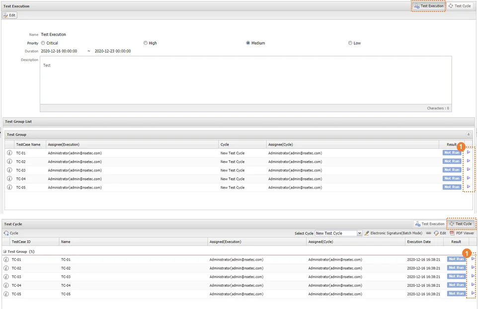 |
② 테스트 스텝(Test Step) 별로 테스트 결과를 체크 표시하거나, 상단의 ‘Pass’, ‘Fail’ 버튼을 클릭하여 해당 Test Case의 테스트 스텝의 결과를 일괄 입력한다.
③ 하단의 Pass, Fail, Block, Pending을 선택해 테스트 결과를 입력한다.
④ ‘OK’ 버튼을 클릭하여 테스트 실행 및 결과 입력을 완료한다.
|
테스트 스텝의 결과에 상관없이 Test Case의 최종 테스트 결과를 사용자가 직접 선택할 수 있다. 창 하단 ‘Pass’, ‘Fail’, ‘Block’, ‘Pending’ 라디오 버튼을 통해 테스트 결과를 수행한다. 테스트 결과 ‘Pass’, ‘Fail’, ‘Block’ 입력 후 저장 시 더 이상 Test Run 결과 변경할 수 없다. 다시 테스트 결과를 입력하기 위해서는 Test Cycle 탭에서 ‘Cycle’ 버튼을 실행해 새 Cycle을 생성해야 한다. |
테스트 실행 및 결과 검증을 위한 전자 서명을 입력할 수 있다. 테스트 완료 후 테스트 결과 보고서(Report) 생성 시 Test Case 내용 및 테스트 결과와 함께 표시된다.
① 테스트 실행 결과 입력 후 ‘Test Run’ 창의 ‘OK’ 버튼을 클릭하면, 전자 서명 입력 여부를 묻는 창이 생성된다.
Yes : 현재 SILKROAD에 로그인 되어있는 사용자의 전자 서명 입력
No : 다른 사용자의 아이디로 로그인하여 전자 서명 입력
|
② ‘Role’을 클릭하여 해당 Test Run에 대한 검증 역할을 선택한다.
③ ‘Approve’ 버튼을 클릭한다.
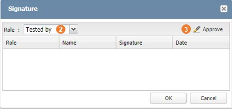 |
④ ‘Confirm Signature’ 창이 생성되면 전자 서명 비밀번호를 입력하고 ‘Confirm’ 버튼을 클릭한다.
|
⑤ 전자 서명을 확인하고 ‘Add Sign’ 버튼을 클릭한다.
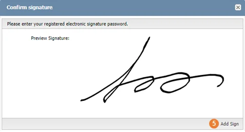 |
⑥ ‘OK’ 버튼을 클릭하여 전자 서명 입력을 완료한다.
|
Test Case를 선택해 전자 서명을 일괄 입력할 수 있다.
① ‘Test Cycle’ 탭의 ‘Electronic Signature(Batch Mode)’ 버튼을 클릭하면 ‘Electronic Signature(Batch Mode)’ 창이 생성된다.
② ‘Role’ 펼침단추를 클릭하여 해당 Test Run에 대한 검증 역할을 선택한다.
③ ‘Approve’ 버튼을 클릭한다.
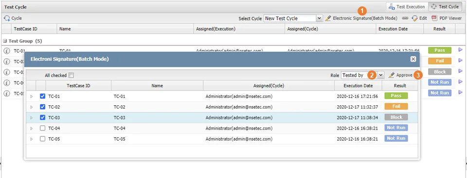 |
④ 펼침(▷)버튼을 클릭했을 경우 이전에서 서명했던 기록을 확인할 수 있다
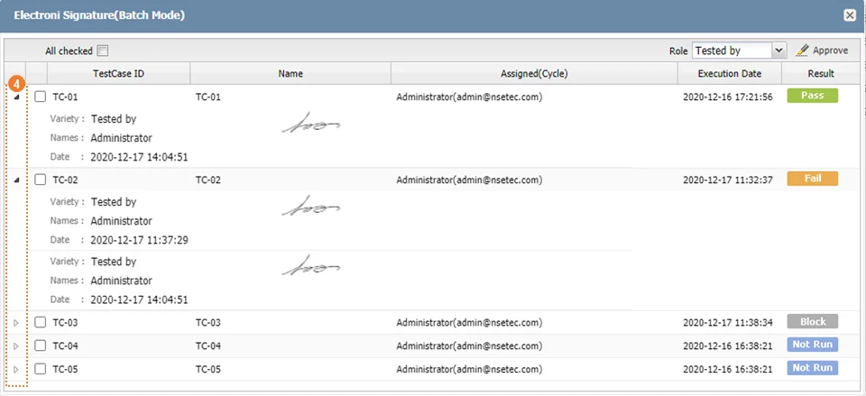 |
⑤ 전자 서명 계정 선택을 묻는 창이 생성된다.
Yes: 현재 SILKROAD에 로그인 되어있는 사용자의 전자 서명 입력
No: 다른 사용자의 아이디로 로그인하여 전자 서명 입력
|
⑥ ‘Confirm Signature’ 창이 생성되면 전자 서명 비밀번호를 입력하고 ‘Confirm’ 버튼을 클릭한다.
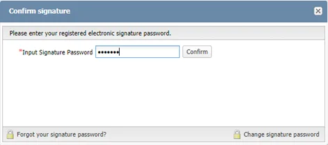 |
① 전자 서명을 확인하고 ‘Add Sign’ 버튼을 클릭한다.
|
② ‘OK’ 버튼을 클릭하여 전자 서명 입력을 완료한다.
|
Test Case의 테스트 실행을 위해 Execution의 Test Group에 대한 회귀 테스트를 수행할 수 있다. Cycle별 Test Case의 테스트 실행 이력 및 결과를 확인할 수 있으며 해당 내용에 대한 PDF 파일을 생성할 수 있다.
|
|
구분 | 명칭 | 설명 |
| Cycle | Test Cycle 생성 버튼 |
| Test Execution/Test Cycle 탭 | Test Execution, Test Cycle 메뉴 탭 |
| 메뉴 바 | Test Cycle 아이콘 영역 |
| Test Group | Test Cycle에 등록된 Test Case 목록 |
New Execution 생성 시 기본 Cycle을 자동으로 생성할 수 있다.
① Document List(또는 폴더, 여백(Root)을 우 클릭)에서 ‘New Item’ 메뉴의 펼침(▼)버튼을 클릭한다.
② ‘Test Execution’ 버튼을 클릭한다.
③ ‘Select Test Procedure’ 창에서 ‘Test Procedure’를 선택한다.
④ ‘OK’버튼을 클릭하면 ‘Test Execution’창이 생성된다.
⑤ ‘Test Execution’창의 ‘Open Procedure’ 영역에 Test Case 목록이 표시된다.
⑥ Execution 명, 설명 등의 정보를 입력한다.
⑦ ‘Create Test Cycle’을 체크하고 저장한다.
|
새 Test Cycle을 생성한다. 기존 생성된 Cycle에 추가된 Test Case가 자동 승계되고, 옵션 선택에 따라 기존 Cycle에서 입력된 결과(Result)를 새 Cycle로 가져올 수 있다.
① ‘Test Cycle’ 탭으로 이동 후 ‘Cycle’ 아이콘을 클릭해 ‘New Cycle’창을 생성한다.
② Test Cycle 명, 설명 등의 정보를 선택/입력한다.
③ 새 Test Cycle에 제외할 Test Case의 체크박스를 Uncheck 한다.(기본 설정은 전체 선택)
- Filter의 체크 박스를 사용해 원하는 테스트 결과를 가진 Test Case만 선택 할 수 있다.
④ ‘Re use’ 옵션 선택 시 이전 Test Cycle에 입력된 테스트 결과를 그대로 새로 생성할 ‘Test Cycle’에 유지한다.
⑤ ‘Apply’ 또는 ‘OK’ 버튼을 클릭한다.
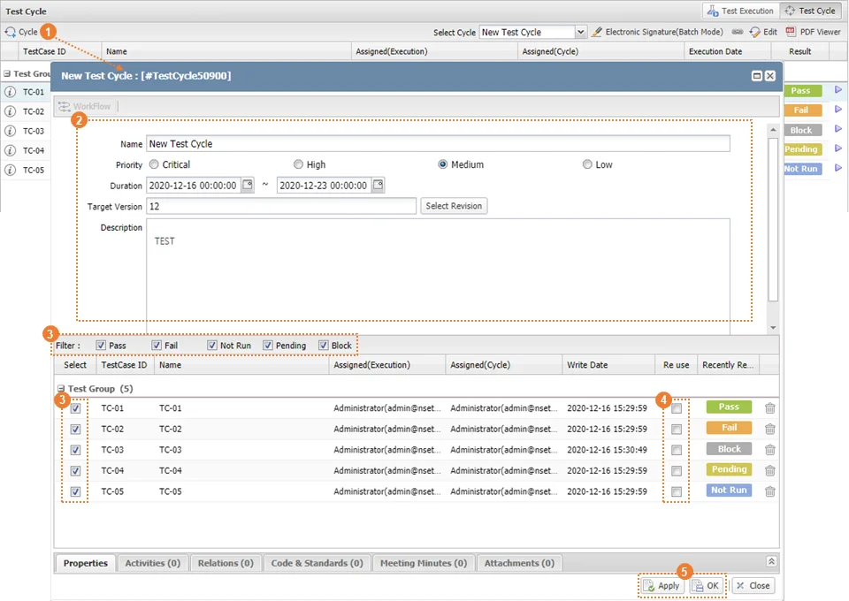 |
⑥ ‘Test Cycle’은 ‘Select Cycle’의 펼침(∨) 버튼을 클릭해 버전별 확인이 가능하다
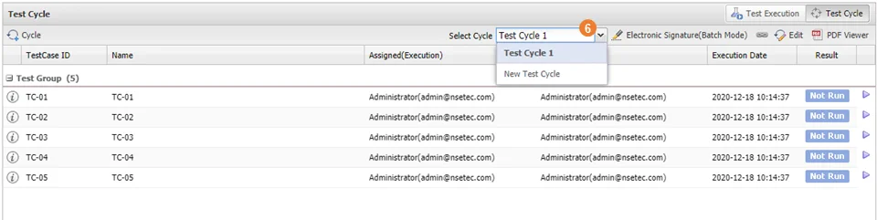 |
① ‘Test Cycle’ 탭으로 이동해 ‘Edit’ 버튼을 클릭하면 ‘Test Cycle’ 정보창이 생성된다.
② ‘Test Cycle’ 정보내 Test Cycle 명, Priority, Duration, Target Version, Description을 수정 할 수 있다.
③ Test Case를 삭제할 수 있다.
④ ‘Cycle Assignee’를 더블클릭하여 개별 변경할 수 있다.
⑤ 해당 Test Cycle을 삭제(Admin 및 프로젝트 매니저 권한만 해당)할 수 있다.
⑥ ‘Apply’ 또는 ‘OK’ 버튼을 클릭하여 수정을 완료한다.
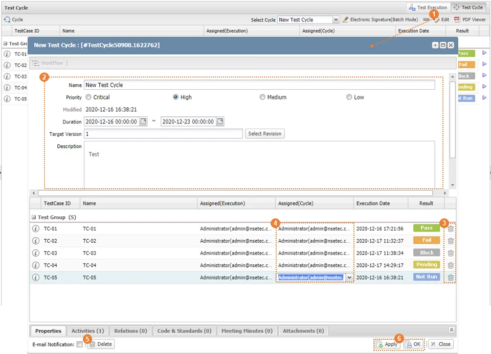 |
Test Cycle의 대상 소스 리비전(Source Revision)을 등록할 수 있다. 소스 리비전은 SILKROAD 소스관리시스템에서 등록/관리된다.
① ‘Test Cycle’ 탭으로 이동해 ‘ ’ 버튼을 클릭하면 ‘Select Revision’창이 생성된다.
’ 버튼을 클릭하면 ‘Select Revision’창이 생성된다.
② 소스 리비전을 선택한다.
③ ‘OK’ 버튼을 클릭하여 저장을 완료한다.
|
④ 선택된 소스 리비전이 ‘’버튼옆에 표시된다.
|
⑤ 소스 리비전 정보는 Test Cycle의 정보창에서 수정할 수 있다.
⑥ ‘Test Cycle’ 탭으로 이동해 ‘Edit’ 버튼을 클릭하면 ‘Test Cycle’ 창이 생성된다.
⑦ ‘Select Revision’ 버튼을 클릭하면 ‘Select Revision’ 창이 생성된다.
⑧ 소스 리비전을 선택하면 변경한 리비전이 표시된다.
(‘Target Version’내 직접 입력으로도 가능하다)
⑨ ‘Apply’ 또는 ‘OK’ 버튼을 클릭하여 저장을 완료한다.
|
Cycle 별 Test Case의 테스트 실행 결과를 PDF 파일 형태로 생성할 수 있다. 해당 파일에는 Test Case 내용, 테스트 실행 결과, 전자 서명 정보가 표시된다.
① ‘Test Cycle’ 탭으로 이동하여 ‘PDF Viewer’ 버튼을 클릭한다.
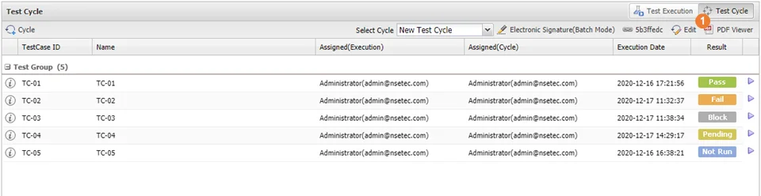 |
② PDF 파일 다운로드된다.
테스트 문서 버전 및 Cycle 별 Test Case의 테스트 실행 결과 이력을 관리할 수 있다.
① ‘Document List’의 Test Procedure 문서를 선택한다.
② ‘Document View’ 하단의 ‘Base Element’ 영역에 Test Case 목록이 표시된다.
③ Test Case의 ‘ ’ 버튼을 클릭하면 ‘Test Case’ 정보창이 생성된다.
’ 버튼을 클릭하면 ‘Test Case’ 정보창이 생성된다.
④ ‘Results’ 영역을 펼치면 해당 문서의 Test Case들에 대한 Test Execution, Test Cycle별 테스트 실행 결과 이력이 표시된다.
|
Test Report는 Test Case 테스트 실행 후 생성한다.
① Document List에서 ‘New Item’ 메뉴의 펼침(▼)버튼을 클릭한다. 또는 Document List내 폴더 및 여백을 우 클릭한다.
② ‘Test Report’ 버튼을 클릭한다.
|
③ ‘New Test Report’ 창이 생성되면 대상 Test Procedure 문서를 클릭한다.
(‘Result’가 입력되지 않은 Not Run의 상태의 Test Case는 표시되지 않는다.)
④ ‘Next’ 버튼을 클릭한다.
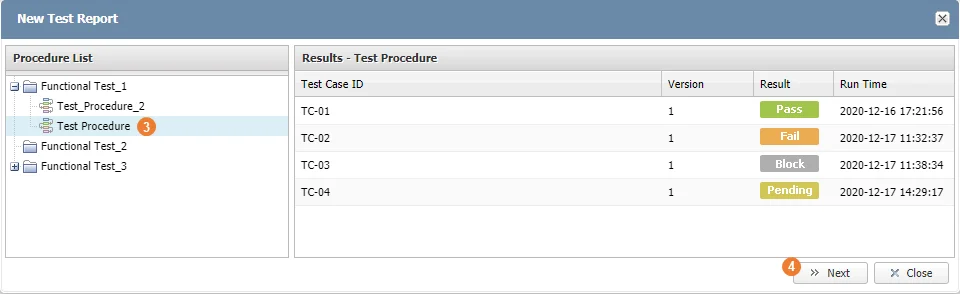 |
⑤ Report 템플릿을 선택한다.
⑥ ‘OK’ 버튼을 클릭하면 ‘Publish’ 창이 생성된다.
⑦ Publish 정보를 입력한다.
⑧ ‘OK’ 버튼을 클릭한다.
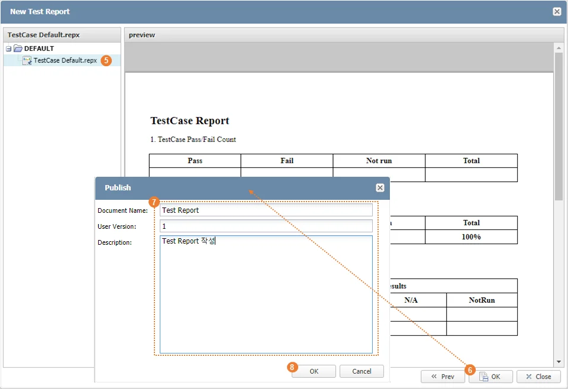 |
⑨ ‘DOCS’가 실행된다.
⑩ ‘Test Report’ 내용 및 템플릿에 수정이 필요한 경우 문서를 수정하여 ‘Publish’한다.
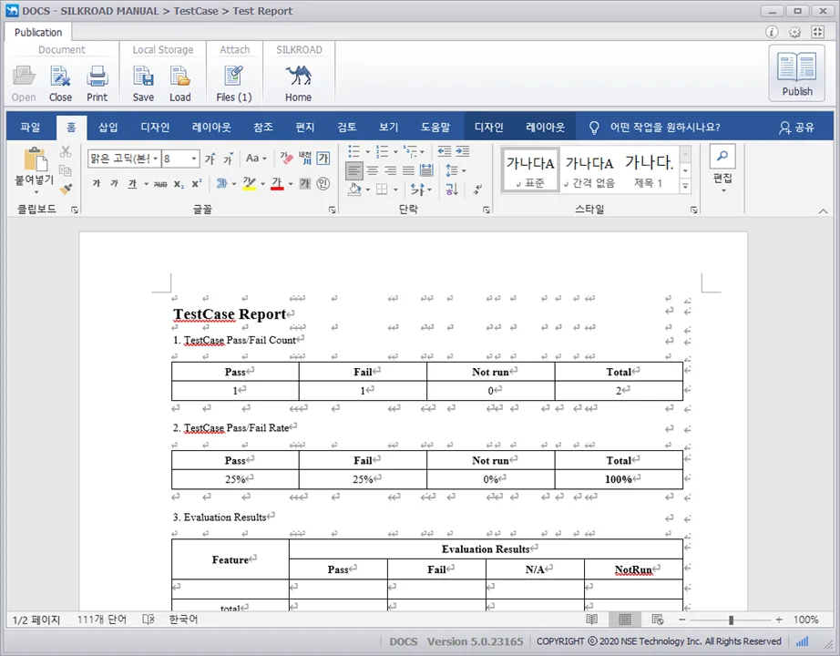 |
‘Test Report’로 생성된 Test Case의 내용, 테스트 실행 결과, 전자 서명 등의 정보가 포함된 PDF 파일이 ‘Test Report’의 첨부파일로 자동 등록된다.
① ‘Document List’의 ‘Test Report’를 선택한다.
② ‘ ’ 버튼을 클릭하면 문서 정보창이 생성된다.
’ 버튼을 클릭하면 문서 정보창이 생성된다.
③ ‘Attachment’ 탭을 클릭하여 첨부되어있는 문서를 체크한다.
④ ‘Download Checked Items’ 버튼을 클릭하여 첨부파일을 다운로드한다.
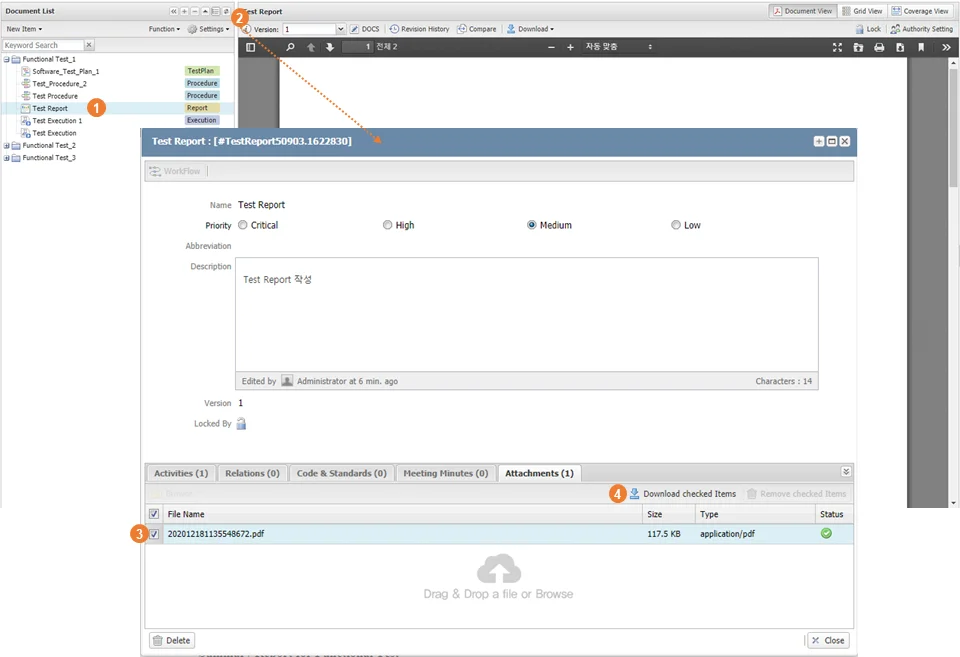 |
요구사항과 Test Case 간의 추적성 정보 및 테스트 수행 결과를 확인할 수 있다.
① ‘Document List’내 ‘Function’ 펼침버튼을 클릭하고 ‘Coverage’ 버튼을 클릭 하면 ‘Coverage View’창이 생성된다.
② ‘Menu’에서 펼침버튼을 클릭해 대상 메뉴와 문서를 선택한다.
③ Test Case와 추적성 연결된 상위 요구사항에 테스트 결과를 표시된다.
|
구분 | 명칭 | 설명 | |
| Document List | 요구사항 Phase 및 문서 목록 | |
| 요구사항 문서명 | Document List에 선택된 요구사항 문서명 | |
| 요구사항 | Requirment 문서에 포함된 요구사항 | |
| Test Case | 해당 요구사항과 추적성이 연결된 Test Case | |
| 테스트 수행 결과 | Test Case 테스트 실행 결과 | : 테스트 실패 |
|
| ||
: 테스트 실행 불가 | | ||
없음 | |||
| 커버리지 결과 | 요구사항-Test Case 커버리지 결과 | |
테스트 수행 미완성에 따른 커버리지 미완성 | 추적 Test Case 없음 | ||
테스트 수행 성공에 따른 요구사항 이행 성공 | 테스트 수행 실패에 따른 요구사항 이행 실패 | ||
커버리지 수 분석 | 요구사항과 추적성이 연결된 Test Case 전체 개수 중 테스트 수행 성공, 실패, 실행 안한 Test Case 수 | ||
| Requirement Summary | 요구사항 커버리지 상태 표시 그래프 | |
Test Case Summary | Test Case 테스트 결과(Pass/Fail/Not Run) 표시 그래프 | ||
Filter | ID, Result 기반 필터 | ||
Export | Coverage 뷰를 Excel 로 다운로드 | ||
Coverage 뷰에 표시된 결과를 ID, Result 기준으로 필터링 한다.
① Coverage View 창에서 대상 메뉴와 문서를 선택한다.
② Filter 버튼을 클릭한다.
③ ID 또는 Result를 입력한 후 Search 버튼을 클릭한다.
④ ‘Requirement Summary’ 파이 차트에서 결과(Result) 영역을 클릭해 필터를 실행할 수 있다.
Coverage 뷰에 표시된 결과를 Excel 로 다운로드 한다.
① Coverage View 창에서 대상 메뉴와 문서를 선택한다.
② Export 버튼을 클릭한다.
③ Export State View 창이 생성된다.
④ ‘Save’버튼을 클릭한다.
|
구분 | 명칭 | 설명 |
| Document List | Folder, 테스트 문서, 테스트 수행 목록, Function, Setting |
| 메뉴 바 | 기능버튼 영역 |
| View(뷰) 탭 | Document View(문서 뷰) : PDF 저장 방식의 뷰 Grid View(그리드 뷰) : Test Feature/Test Case 항목 뷰 Coverage View(커버리지 뷰) : Test Feature/Test Case 추적성 분류 표 뷰 |
| Viewer | View 탭 별 해당정보 표시 영역 |
생성된 폴더 더블클릭 시, 폴더 이름을 수정할 수 있다. 폴더 내 파일들이 드래그&드롭을 통해서 자유롭게 상하로 이동이 가능하며 타 폴더로도 이동 가능하다. 단 Plan 모듈에서 Apply된 문서들의 이동은 불가능하다.
폴더 내 하위폴더 생성이 가능하고, 폴더 내 문서 또는 폴더가 있는 경우 폴더 삭제 시 폴더와 함께 일괄 삭제된다.
① ‘Document List’ (또는 Document List내 폴더 및 여백을 우 클릭)에서 ‘New Item’ 메뉴의 펼침(▼)버튼을 클릭한다. 또는 리스트 내 폴더, 여백 영역을 우 클릭한다.
② ‘Folder’를 선택한다.
③ ‘Document List’에 Folder가 생성된다. Folder명을 입력한다.
① ‘Folder’명을 수정하기 위해 ‘Folder’를 더블클릭한다.
② 활성화된 ‘Folder’명을 수정한다.
③ ‘Folder’를 삭제하기 위해 ‘Folder’를 우 클릭하여 ‘Delete’ 버튼을 선택한다.
-‘Delete’ 버튼은 Admin, 프로젝트 매니저 권한 사용자에게만 활성화된다.
④ ‘Yes’를 클릭하여 삭제를 완료한다.
- 폴더 삭제 시 폴더에 위치한 문서, 폴더가 일괄 삭제된다.
리스트 내 아이템은 모두 드래그 앤 드롭으로 이동이 가능하다. 폴더는 위치 이동 시 폴더에 포함된 아이템도 모두 함께 이동된다.
① 이동 대상 아이템을 선택한다.
② 원하는 위치에 드래그 앤 드롭하여 위치를 이동한다.
- Drag and drop 아이콘이  : 해당 위치로 이동
: 해당 위치로 이동
- Drag and drop 아이콘이 : 해당 폴더 하위로 이동
|
Document List에서 아이템 위치 이동을 수월하게하기 위해 ‘Order Setting’ 기능을 제공한다.
① ‘Order Setting’ 실행 아이콘 ‘ ’ 을 클릭 한다.
② 위치를 이동할 아이템을 클릭한다.
③ ‘Up/Down’ 버튼을 클릭해 위치를 이동한다.
④ ‘Apply Index’ 버튼을 클릭해 변경된 위치를 저장한다.
- 여러 아이템의 위치를 변경하고 ‘Apply Index’를 실행 해 한번에 반영할 수 있다.
잠금 설정(Lock) 상태의 문서는 위치 이동이 금지되고, 잠금 해제(Unlock) 후 위치를 변경할 수 있다. Plan 메뉴에서 Apply한 문서는 위치를 변경할 수 없다. |
‘Document List’내에 존재하는 테스트 실행 및 실행되지 않은 모든 Test Case들이 한 화면에서 결과가 표시된다.
① ‘Document List’에서 ‘Function’ 메뉴의 펼침(▼)버튼을 클릭한다.
② ‘Full Summary Report’를 선택한다.
③ ‘Full Summary Report’창에서 테스트 실행 및 실행되지 않은 전체의 Test Case가 표시된다.
④ ‘PDF Download’ 클릭 시 PDF 파일로 PC에 다운로드 된다.
⑤ ‘Excel Export’ 클릭 시 MS-Excel 파일로 PC에 다운로드 된다.
Default로 지정된 ‘Test Report’ 양식을 변경할 수 있다.
① ‘Document List’에서 ‘Settings’ 메뉴의 펼침(▼)버튼을 클릭한다.
② ‘Test Report Template Setting’을 선택한다.
③ ‘Test Report Template Setting’창에서 ‘Upload’ 클릭해 PC에 있는 ‘Test Report Template’을 불러온다.
④ 해당 ‘Test Report Template’를 우 클릭하여 ‘Set Default’를 클릭하면 양식이 지정된다..
⑤ 삭제를 원하는 ‘Test Report Template’를 클릭하고 ‘Delete’버튼을 클릭해 삭제한다.
문서 그리드 뷰(Grid View) 필터(Filter)에 표시되는 Test Feature 또는 Test Case의 속성 필드의 표시 유무를 설정한다. Test Feature 또는 Test Case는 사용자의 필요에 따라 많은 수의 속성 필드를 가질 수 있다. 이 필드는 문서의 종류에 따라 필요한 필드와 필요하지 않은 필드로 나뉜다. 이 경우 ‘Field Dependency Setting’은 사용자의 설정에 부합하는 문서를 검색하고 그리드 뷰 필터에 표시할 Test Feature 또는 Test Case 속성 필드를 선택할 수 있다.
① ‘Document List’에서 ‘Settings’ 메뉴의 펼침(▼)버튼을 클릭한다.
② ‘Field Dependency Settings’로 위치 이동 후 Plan 또는 Procedure를 선택한다
③ ‘Setup Field Dependency’창에서 ‘New Filter’버튼을 클릭해 필터 이름을 입력하고, ‘OK’버튼을 클릭한다.
④ 문서 검색 조건으로 문서의 속성 필드(Name, Priority 등)를 선택하고, 조건을 설정한다.
⑤ 하단 Test Feature 또는 Test Case 속성 필드 목록에서 그리드 화면 필터에 표시(Visible)할 필드를 체크 한다.
⑥ 상단 ‘Apply grid filter’를 체크한다.
⑦ ‘OK’ 버튼을 클릭한다.
설정을 마치고 문서 검색 조건에 부합하는 문서를 선택해 그리드 뷰에서 필터 클릭 시, 사용자가 표시(Visible)하고자 설정한 필드만 표시된다.
필터는 하나의 필터만 적용을 유지한다. 또 다른 필터의 ‘Apply grid filter’를 체크해 저장 시 안내 메시지를 생성하고, 적용 필터를 결정할 수 있다. |
|
|
Test Execution 생성 시 기존 Execution에 있는 Test Case는 표시하지 않도록 하는 기능이다.
① ‘Document List’에서 ‘Settings’ 메뉴의 펼침(▼)버튼을 클릭한다.
② ‘Execution Setting’을 클릭하면 ‘Execution Setting’창이 생성된다.
③ ‘Include Test case(Test Run exists)’에 기본 체크되어 있으며, ‘Not Include Test case(Test Run exists)’체크 후 저장한다.
Test Execution 생성 시 기존 Execution에 있는 Test Case는 미표시된다.
‘Document List’에서 하나의 문서를 선택하는 경우, PDF 기반의 Document View가 실행되며, 문서의 버전을 변경하여 버전별 문서 내용을 열람할 수 있다. 문서 하단에는 해당 문서에 등록된 Test Feature 또는 Test Case 목록이 표시된다. 단, 선택된 문서가 Sub Document를 가진 문서인 경우 Sub Document가 가진 Test Feature 또는 Test Case가 목록에 같이 표시되며, 문서 병합을 실행할 수 있는 ‘Product’버튼이 생성된다.
문서의 권한이 ‘None’으로 설정된 사용자는 해당 문서의 목록은 확인할 수 있으나 내용은 열람할 수 없다.
① ‘Document List’에서 하나의 문서를 클릭한다.
|
구분 | 명칭 | 설명 |
| Information | 문서 정보 |
Version | 문서 버전 목록 | |
| DOCS | DOCS 실행 |
| Revision History | 문서 개정 이력 |
| Compare | 문서 버전별 비교 |
| Product | 마스터 문서에 병합할 서브문서가 있을 경우에만 표시 |
| Download | 문서 파일 다운로드 (PDF) ※ 프로젝트 매니저 또는 Admin은 MS-Word 형식으로 다운로드 가능 |
| Summary Report | Test Procedure에만 표시되며, Test Case 의 테스트 실행결과를 확인 |
| Lock/Unlock | 문서 잠금/잠금 해제 설정 |
| Authority Setting | 문서 접근 및 편집 권한 설정 |
① ‘Document List’에서 문서를 선택한다.
② 문서 뷰어 좌측 상단의‘ ’버튼을 클릭한다. 또는 문서를 우 클릭 해 ‘Detail Info’버튼을 클릭한다.
’버튼을 클릭한다. 또는 문서를 우 클릭 해 ‘Detail Info’버튼을 클릭한다.
③ 문서명, Priority, Description, Locked by, Abbreviation 등의 정보가 표시된다.
④ Admin 권한 또는 Project Manager 역할의 사용자에게 ‘Delete’ 버튼을 제공한다. 클릭 시 문서가 삭제된다.
문서 버전 콤보박스를 이용해 버전 변경 후 정보창을 여는 경우, 선택한 버전에 해당하는 정보(내용 및 속성)를 표시한다. |
① ‘Document List’에서 문서를 선택한다.
② 문서 뷰어 좌측 상단의 ‘Version’ 펼침단추(∨)를 클릭하여 문서 버전을 선택한다.
③ 문서 버전을 선택하면 선택한 버전에 저장된 내용과 Test Feature (또는 Test Case) 목록을 표시된다.
|
SILKROAD에 저장된 가장 최신 버전의 문서를 DOCS를 통해 편집할 수 있다.
① 좌측 ‘Document List’에서 문서를 선택한다.
② 문서 뷰어 좌측 상단의 ‘DOCS’버튼을 클릭하여 문서편집기(DOCS)를 실행한다.
|
문서의 Publish 이력 관련 정보를 확인할 수 있다. Publish 이력 삭제는 SILKROAD Admin / 프로젝트 매니저 이상의 권한을 가진 사용자만 수행할 수 있다. 해당 권한 이하(프로젝트 멤버) 사용자는 삭제 버튼이 비활성화된다.
① 좌측‘Document List’에서 문서를 선택한다.
② 문서 뷰어 상단의 ‘Revision History’버튼을 클릭하면 문서 Publish 이력을 조회할 수 있는 ‘Revision History’창이 생성된다.
③ ‘Compare’기능을 이용하여 현재 문서의 버전 별 비교가 가능하다.
④ ‘Word Download’ 기능을 이용하여 목록에서 선택한 버전의 문서를 MS-Word 파일로 다운로드 가능하다.
⑤ ‘Revision Download’ 기능을 이용하여 변경 이력 목록을 MS-Word 파일로 다운로드 가능하다.
① Admin 권한 또는 Project Manager 역할의 사용자는 ‘휴지통’ 아이콘을 클릭해 최신 버전 이력을 제외한 변경 이력을 삭제할 수 있다.
① ‘Document List’에서 문서를 선택한다.
② 문서 뷰어 상단의 ‘Compare’ 버튼을 클릭한다.
③ 비교하고자 하는 버전(기준 버전-Base Version)/(비교 버전-Compare Version)을 선택한 뒤 ‘Compare’버튼을 클릭한다.
④ 하단 뷰어에 추가 및 삭제 된 내용의 경우 붉은 색으로 표시되고, 삭제의 경우에는 취소선이 그어지고, 추가된 내용의 경우에 밑줄이 표시된다. 탐색창에 북마크가 표시되며 선택 시 해당위치로 뷰어가 이동된다. 또는 하단의 화살표를 클릭해 수정된 위치로 이동 한다.
|
Test Case 메뉴 내 문서의 버전을 선택해 해당 버전의 문서 내용을 다운로드 한다. 문서의 최신 버전 선택 시 PDF 또는 MS-Word 파일 다운로드를 제공하고, 최신 버전이 아닌 경우 PDF 다운로드만을 제공한다.
① ‘Document List’에서 문서를 선택한다.
② 문서 뷰어 상단의 ‘Download’ 펼침 버튼을 클릭해 ‘Download PDF’ 또는 ‘Download Word’를 선택한다.
③ 문서가 해당 형식의 파일로 다운로드 된다.
① ‘Test Case’ 메뉴를 클릭한다.
② Document List에서 병합할 파일 중 최상위 문서(Master Document)를 클릭한다.
③ ‘Product’버튼을 클릭한다.
④ 필요 시 서브 문서의 ‘Version’ 칼럼을 클릭해 문서의 버전 중 대상 버전을 선택해 병합한다.
- 마스터 문서는 버전을 선택할 수 없다.
⑤ ‘Document Product’ 창에서 ‘Download’버튼을 클릭한다.
⑥ Word파일과 함께 다운로드 할 PDF 생성 여부를 선택한다.
(Convert to PDF 선택 시) PDF로 파일 추가 생성
|
Test Procedure 문서의 버전별 Test Case, 실행 결과 및 전자서명이 PDF 파일로 생성된다.
① ‘Document List’에서 Summary Report를 생성하고자 하는 Test Procedure 문서를 선택한다.
② ‘Summary Report’ 버튼을 클릭하면 Test Cased의 테스트 결과를 표시하는 ‘Summary Report’ 창이 생성된다.
③ ‘Version’ 펼침단추를 클릭하여 Summary Report를 생성하고자 하는 Test Procedure 문서 버전을 선택한다.
- 문서 버전 변경 시 Test Run Status 가 해당 버전의 테스트 결과를 표시한다.
④ ‘PDF Download’ 버튼을 클릭하면 PDF 파일이 생성되어 사용자 PC에 저장된다.
⑤ ‘Excel Export’ 버튼을 클릭하면 Excel 파일이 생성되어 사용자 PC에 저장된다.
프로젝트 매니저, 작성자 또는 권한을 부여 받은 사용자는 문서 잠금/해제 기능을 사용할 수 있다. 문서 잠금/해제 상태는 이미지(잠긴 상태:  , 잠기지 않은 상태:
, 잠기지 않은 상태:  )로 표시된다. 이미지와 함께 표시되는 텍스트는 설정 가능한 잠금/해제 상태를 명시한다.
)로 표시된다. 이미지와 함께 표시되는 텍스트는 설정 가능한 잠금/해제 상태를 명시한다.
구분 | 명칭 | 설명 |
| Lock | 문서 상태 : 잠겨 있지 않음 잠금 설정 : 모든 사용자가 잠금 설정 가능 문서 편집 : 모든 사용자가 문서 편집 가능 |
| Unlock | 문서 상태 : 현재 사용자가 문서를 잠금 설정한 상태 잠금 해제 : 현재 사용자 및 관리자가 잠금 해제 가능 문서 편집 : 현재 사용자 및 관리자만 문서 편집 가능 |
| Locked by other user | 문서 상태 : 다른 사용자에 의해 문서가 잠금 설정된 상태 잠금 해제 : 문서를 잠근 사용자 및 관리자가 잠금 해제 가능 문서 편집 : 문서를 잠근 사용자 및 관리자만 문서 편집 가능 |
프로젝트 관리자(Project Manager) 또는 관리자(Admin) 권한을 가진 사용자는 다른 사용자가 잠근 문서를 잠금 해제 할 수 있다. |
프로젝트 참여자들의 각 문서에 대한 권한을 설정하는 기능으로 프로젝트 관리자(Project Manager) 또는 관리자(Admin) 권한을 가진 사용자만 권한 설정을 수행할 수 있다.
① ‘Document List’에서 문서를 선택한다.
② ‘Authority Setting’ 버튼을 클릭하면 ‘Phase Authority Setting’창이 생성된다.
③ ‘Authority’셀의 펼침단추를 클릭하여 프로젝트 참여자별 해당 문서에 대한 권한을 설정한다.
- Admin : 관리자 권한으로 읽기/쓰기 이외에 잠김 문서에 대한 편집 가능(프로젝트 관리자를 제외한 다른 사용자에 의해 잠긴 문서 잠금 해제 권한)
- Write : 읽기/쓰기 가능
- Read : 읽기만 가능
- None : 문서에 접근 권한이 없으며, 문서 내용이 표시되지 않음.
④ ‘Save’버튼을 클릭하여 저장한다.
|
프로젝트 참여자의 ‘문서 권한’은 대상 사용자에게 설정된 ‘메뉴 권한’을 넘어설 수 없다. 또한, 프로젝트 관리자와 사용자 권한 ‘Admin’인 사용자의 문서권한은 ‘Admin’으로 고정되어 변경할 수 없다. 메뉴 권한의 설정과 확인은 ‘Project Setting-Role&Authority를 참조’ |
|
구분 | 명칭 | 설명 |
| Test Feature/Test Case 목록 | 현재 문서에 등록된 Test Feature/Test Case 목록 |
| 검색 키워드 입력창 | Test Feature/Test Case 아이디 검색 창 |
| 필터 버튼 | Test Feature/Test Case 속성 값(value) 기준 필터 기능 |
|
| Test Feature/Test Case 상세 정보 창 실행 버튼 |
|
| DOCS 실행 버튼 |
| 추적 사항 목록 | 상·하위 추적 사항 목록 |
| 검색 키워드 입력창 | 추적 사항 아이디 검색 창 |
| 추적 사항 내용 | 추적 사항 내용 표시 |
검색 키워드를 입력시 해당 키워드를 포함하는 Test Feature/Test Case 아이디가 리스트에 파란색으로 필터 되어 표시된다.
① ‘ ’ 버튼을 클릭하여 Test Feature/Test Case 속성 값을 지정해 Test Feature/Test Case를 검색할 수 있다.
’ 버튼을 클릭하여 Test Feature/Test Case 속성 값을 지정해 Test Feature/Test Case를 검색할 수 있다.
② 검색 기준 Field Name(Feature/Test Case 속성)을 체크하고, Value(값)을 입력 또는 선택한다. Apply를 클릭하여 요구사항을 필터 한다.
③ Base Test Feature/Test Case 영역에 필터된 것만 표시된다.
필터 적용 시 필터 아이콘이 변경되어 ( |
Test Feature/Test Case Base Element 목록에서 관련된 이슈를 생성한다. 생성된 이슈는 Test Feature/Test Case 와 자동으로 Relation이 연결되어 정보창에 표시된다.
① 문서 화면 하단 Base Element 목록에서 Test Feature/Test Case를 우 클릭한다.
② ‘Create Issue’ 버튼을 클릭한다.
③ 이슈를 생성할 메뉴를 선택하고 ‘OK’ 버튼을 클릭한다.
④ 생성할 이슈 정보를 입력한 후 저장한다.
Test Feature/Test Case 상세 내용 파악 및 상·하위 추적 정보를 통해 Test Feature/Test Case 변경에 따른 영향도 분석을 수행할 수 있다. Test Feature/Test Case 목록의 ‘ ’ 버튼을 클릭하면 선택된 Test Feature/Test Case의 정보 창이 생성된다.
’ 버튼을 클릭하면 선택된 Test Feature/Test Case의 정보 창이 생성된다.
|
구분 | 명칭 | 설명 |
| DOCS | DOCS내 해당 Test Feature/Test Case로 위치 |
| Publication | 문서의 Publication 정보 표시 |
| History | Test Feature/Test Case의 Revision History 정보 표시 |
| Test Feature/Test Case 내용 | 현재 선택된 Test Feature/Test Case의 내용 |
| Up/Down Stream | 선택된 Test Feature/Test Case 기준 상/하위 추적성 표시 |
| Report View | 선택된 Test Feature/Test Case 기준 상/하위 추적성 리포트 (좌측 네모 안쪽으로 들어갈수록 하위이며 동일 수준의 정보는 같은 색으로 표시됨) |
| 추적성 다이어그램 | 선택된 Test Feature/Test Case 기준 상/하위 추적성 다이어그램 (Traceability 모듈에서도 확인 가능) |
| 공통 정보창 탭 | Properties, Activities, Relations, Code & Standards, Meeting Minutes, Attachments 탭을 제공 |
DOCS를 통해 등록된 Test Feature/Test Case를 표로 나열하여 확인할 수 있다. ‘Document List’에서 문서를 선택 후, 우측 문서 뷰어 상단의 ‘Grid View’ 버튼을 클릭한다. 각 요구사항의 ‘속성(Properties)’을 기준으로 필터를 적용하여 Test Feature/Test Case 목록을 구성 할 수 있다. 필터 적용 사항은 화면이나 Excel 출력 시 적용된다. ‘Export’ 버튼을 이용해 Test Feature/Test Case 목록을 Excel 파일로 출력 시 Feature/Test Case 내용 중 표, 그림, 수식은 표시되지 않는다. Excel 파일 외에도 Excel xml. CSV, TSV, HTML 출력을 지원한다.
Test Feature/Test Case 우클릭을 통해 대상의 정보창과 DOCS를 열 수 있다. DOCS를 통해 열린 문서는 본문에서 우 클릭한 대상 Test Feature/Test Case의 위치에 자동으로 포커스가 이동되어 표시한다.
|
구분 | 명칭 | 설명 |
| Version | 문서 버전 목록 |
| Filter | 조건 검색창 열기/닫기 Test Feature : Name, Priority, Document Name, Search Tag(Default)를 기준으로 검색 필터링 Test Case : Name, Priority, Descriptin, Search Tag, Modified(Default)를 기준으로 검색 필터링 |
| Export | Test Feature/Test Case 목록 MS-Excel 파일 형식 등 으로 내보내기 |
Grid 화면에 표시된 요구사항의 속성 칼럼을 설정한다. 속성을 체크/해제 해 표시할 정보를 조절한다. 해당 설정은 화면 새로 고침 시 초기화 된다.
① 칼럼(셀) 펼침 단추를 클릭한다.
② ‘Columns’버튼을 선택한다.
③ 그리드에서 표시하고자 하는 칼럼(셀)을 체크한다.
|
Test Feature/Test Case의 속성 필드를 기준으로 해당하는 요구사항을 필터링 한다. Export 시 필터 결과를 반영해 출력한다.
① ‘ ’버튼을 클릭하여 필터 조건 창을 연다.
’버튼을 클릭하여 필터 조건 창을 연다.
② 필터 조건을 입력 및 선택한다.
③ 우측의 ‘Search’ 버튼을 클릭하여 필터 조건을 적용한다.
④ 필터 조건에 따른 검색 결과가 그리드에 표시된다.
|
그리드 뷰에 표시된 요구사항을 MS-Excel로 내보내는 기능이다. 요구사항 목록에 필터가 적용된 경우 해당 결과를 반영해 출력한다.
① ‘Export▾’버튼을 펼친다.
② MS-Excel 파일, CSV, TSV, HTML을 선택해 사용자 PC에 다운로드 한다.
‘Document List’에서 선택된 문서의 Test Feature, Test Case를 기준으로 레벨별 상·하위 추적 정보를 표시한다. 요구사항 클릭 시 확대되어 내용을 표시한다. (표, 그림, 수식을 정상 표시)
구분 | 명칭 | 설명 |
| Filter | 조건 검색창 열기/닫기 ID, Document, From(상위), To(하위), 테스트결과(Pass, Fail, Not Run, Pending, Block)(Default)를 기준으로 검색 필터링 |
| Expand Option | 상,하위 추적성 문서 선택 |
| View Optioin | ID만 보기, 상,하위 레벨선택하기 |
| / + | Coverage 내용 축소 및 확대 |
| Export | Test Feature/Test Case 목록을 MS-Excel, MS-Word 파일 형식 등 으로 내보내기 |
Requirement, Test Plan, Test Procedure간의 추적성 정보 및 테스트 수행 결과를 확인할 수 있다.
① Coverage View탭 이동시 Test Plan의 Test Feature, Content 또는 Test Procedure의 Test Case, Content가 표시된다.
② Test Case의 경우 테스트 결과(Pass(테스트 성공), Fail(테스트 실패), Block(테스트 정지), Pending(테스트 대기), Not Run(테스트 미수행))가 표시된다.
③ ‘ ’ 또는 ‘
’ 또는 ‘ ’버튼을 클릭하여 레벨(Level=Depth=Phase)을 확장/축소 한다.
’버튼을 클릭하여 레벨(Level=Depth=Phase)을 확장/축소 한다.
④ 요구사항-Test Feature/Test Case 사이의 추적성 내용이 표시된다.
|
Test Plan, Test Procedure 문서와 추적성이 연결된 문서 중 Level을 확장할 대상을 선별하도록 옵션을 설정한다. Level 추가 시 Base Level 문서와 추적성 연결된 상/하위 문서 중 사용자가 선택한 특정 문서와의 추적성 정보만을 표시한다.
① ‘ ’를 클릭한다.
’를 클릭한다.
② ‘Select Document’ 옵션을 체크 한다.
③ ‘ ’ 버튼을 클릭한다.
’ 버튼을 클릭한다.
④ ‘Covered Document List’창에서 추적성 정보를 표시할 문서를 선택한다.
⑤ ‘Apply’버튼을 클릭한다.
|
사용자가 설정한 ‘Select Document’옵션 체크는 수동으로 체크 해제하거나 화면을 새로 고침(F5 새로 고침 또는 다른 메뉴 이동 후 복귀)하기 전까지 유지된다. 따라서 옵션 설정 후 Level 추가 시 마다 상/하위 문서를 선택하게 된다. |
Test Feature/Test Case와 추적성 연결된 아이템을 화면에 표시하는 상태를 설정한다. 두 가지 옵션을 이용해 ID Tag 만을 간단하게 표시하거나 추가된 Level 중 일부만을 화면에 표시하도록 할 수 있다.
① ‘’를 클릭한다.
② ‘Show ID only’ 옵션을 체크한다.
③ 요구사항 문서명과 내용을 제외한 ID만 표시된다.
④ ‘Select Level’을 클릭한다.
⑤ 추가된 Level이 콤보박스에 버튼 형태로 나열된다.
⑥ 콤보박스에서 Level의 X 버튼을 눌러 제외하거나 추가 해 화면에 사용자가 원하는 Level 정보만 표시한다.
|
사용자가 설정한 ‘Show ID only’ 옵션과 ‘Select Level’ 설정은 수동으로 체크 해제하거나 화면을 새로 고침(F5 새로 고침 또는 다른 메뉴 이동 후 복귀)하기 전까지 유지된다. |
|
병합된 마스터 문서 Excel Export 시 사용자 편의에 따라 요구사항 셀 병합 및 서브 문서명을 마스터 문서명으로 표시하는 기능이다.
① ‘Export Options’를 클릭한다.
② ‘Cell Merge’ 옵션을 체크/해제한다.
- ‘Cell Merge’옵션 체크 : Excel 다운로드 시 실크로드 화면과 같이 마스터 문서 Test Feature/Test Case ID, Content 셀이 Merge되어서 출력
- ‘Cell Merge’옵션 체크 해제 : Excel 다운로드 시 실크로드 화면과 같이 마스터 문서 Test Feature/Test Case ID, Content 셀이 Merge되어서 출력 셀 Merge 해제되어 출력
|
③ ‘Display Master Document Name’을 체크/해제한다.
- ‘Display Master Document Name’옵션 체크 : Excel 다운로드 시 Sub 문서명이 Master 문서명으로 출력
- ‘Display Master Document Name’옵션 체크 해제 : Excel 다운로드 시 Sub 문서명을 그대로 출력
|
‘Cell Merge’옵션은 Coverage Export한 Excel 파일을 사용자가 편집하기에 유용하며, ‘Display Master Document’기능은 Master-Sub 문서에서 Sub 문서는 Master 문서의 하위 내용으로 Coverage 제출 시 Master 문서 명으로 변경하는 작업을 지원해준다. |
현재 선택된 문서와 추적성이 연결된 상‧하위 문서들의 내용을 검색한다. ID 필드는 모든 레벨(Level=Depth)을 대상으로 필터링하며, Document 필드, From/To는 오직 Level 1 Up/Downstream 이상의 레벨만을 대상으로 한다. Test Case의 경우 테스트 결과(Pass, Fail, Block, Pending, Not Run)를 분류해서 검색이 가능하다.
① ‘Filter’버튼을 클릭한다.
② ‘Filter’영역이 펼쳐지면 아래 조건에 따라 검색 옵션을 선택한다.
③ ‘Search’버튼을 클릭한다.
④ 검색 결과가 표시된다.
|
Test Plan/Test Procedure 문서에 등록된 Test Feature/Test Case가 많을 경우 개수를 나눠서 커버리지 정보를 조회할 수 있다.
① 하단의 개수 펼침단추를 클릭해 한 화면에 표시하고자 하고자 하는 개수를 선택한다.
② 선택한 숫자만큼 커버리지 뷰에 표시되고 페이지 지정 및 화살표를 클릭해 이동할 수 있다.
|
현재 화면에 보이는 정보를 MS-Excel 파일로 로컬 PC에 다운로드 하는 기능이다. 필터, 뷰 옵션, 레벨 추가 등이 적용된 커버리지 뷰를 반영해 Excel로 다운로드 한다.
① ‘Screen Export’버튼을 클릭한다.
② 현재 화면에 보이는 커버리지 뷰가 Excel 양식으로 로컬 PC에 다운로드 된다.
사용자가 선택한 범위의 커버리지 정보를 MS-Excel 파일로 로컬 PC에 다운로드 하는 기능이다. ‘Full Export’를 클릭하여 옵션 창을 띄운 후 추적성 레벨과 요구사항 수, 표시 형식을 설정하고 다운로드 한다.
구분 | 명칭 | 설명 |
Total Level | 기준문서부터 지정된 Depth까지 모두 Excel 다운로드 | |
Range-Level | 선택한 Depth만 Excel 다운로드 | |
| Tag ID only | Test Feature/Test Case, 추적성 연결 요구사항의 내용을 제외한 ID만이 Excel 다운로드 |
| Total Req’s | 첫 번째 Test Feature/Test Case부터 정해진 숫자만큼의 Test Feature/Test Case를 Excel 다운로드 |
| Range | 정해진 범위의 Test Feature/Test Case만 Excel 다운로드 |
현재 화면에 보이는 커버리지 뷰를 MS-Word 파일로 로컬 PC에 다운로드 하는 기능이다.
① 우측 상단의 ‘Export To Word’버튼을 클릭한다.
② 현재 화면에 보이는 커버리지 뷰가 MS-Word 양식으로 로컬 PC에 다운로드 된다.
|
번호 | 메시지 | 설명 | 해결방안 |
|---|---|---|---|
1 | Unauthorized or erroneous approach. | 권한이 없는 사용자가 문서에 접근하는 경우 | |
2 | Error to load Publication Tree! | Publish 목록 불러오기를 실패하였을 경우 | |
3 | Delete failed | 문서 또는 폴더 삭제를 실패하였을 경우 | |
4 | Unable to erase Phase connected to Plan. | 계획관리시스템과 연계된 Polder 삭제를 실패하였을 경우 | |
5 | Unable to erase Folder. | 문서가 없는 Folder 삭제를 실패하였을 경우 | |
6 | Job failed. | Folder 삭제 및 해당 Folder의 문서들을 다른 Folder로 이동시키는데 실패하였을 경우 | |
7 | This document has been locked by another user. | 이미 다른 사용자에 의해 잠금 설정된 문서를 편집하고자 할 경우 | |
8 | This document is link item. | 링크 문서의 편집을 시도할 경우 | |
9 | There is no more relation in this document. | 커버리지 뷰에서 더 이상 표시할 요구사항이 없을 경우 | |
10 | Can not be saved. No changes. | 저장없이 창을 닫을 경우 | |
11 | Completed TestRun can not be re-initiated. | 이미 테스트실행된 테스트케이스의 실행버튼을 클릭했을 경우 | |
12 | Fail to change signature password! | 테스트 결과의 서명저장이 실패하였을 경우 | |
13 | Folder can not be registered. | 폴더생성이 실패했을 경우 | |
14 | The same TestCase( ) exist! | 같은 테스트케이스를 테스트그룹에 추가할 경우 | |
15 | This Name already exists. | 같은 이름의 테스트사이클을 생성할 경우 | |
16 | Items are locked, Items cant be deleted. | 잠겨있는 문서를 삭제 시도할 경우 | |
17 | Test Case Version is not up to date. | 버전이 올라간 테스트케이스를 Execution에서 테스트 실행할 경우 |


 : 테스트 성공
: 테스트 성공 : 테스트 실행 안함
: 테스트 실행 안함  : 테스트 임시저장
: 테스트 임시저장 : 테스트 실행
: 테스트 실행 


 )로 표시된다.
)로 표시된다.